Du nettoyage des données à l'atterrissage sur une voiture en mouvement, sur Simulink
Nous avons d'abord construit une commande de référence : un modèle d'état identifié pour l'altitude et le lacet, puis un régulateur LQI calculé par dlqr, trop vif à 50 ms (gains divisés par deux). Nous avons ensuite identifié le drone (réseau GRU pour z et le lacet, ARX pour l'attitude), construit des environnements d'apprentissage, et entraîné des agents PPO qui se transfèrent sur Simulink sans réentraînement. L'agent d'altitude suit une PRBS avec 2,7 cm de RMSE, contre 8,3 cm pour le LQI double intégrateur (gains réajustés pour 20 Hz) et 5,6 cm pour un LQ synthétisé sur un modèle ARX ; l'agent de lacet tient un scan de 360° à 0,39°, contre 9,8° pour le LQI. Les gains du LQI, réglés sur des modèles Simulink continus, font osciller z et divergent sur θ lorsqu'ils sont échantillonnés à 20 Hz ; réajustés, ils fonctionnent, et l'écart restant vient du modèle double intégrateur, qui ignore la dynamique des moteurs. L'agent de position, réentraîné pour les saturations, pilote les deux axes horizontaux sans nouvel entraînement grâce à la symétrie de l'ARX et à une rotation des erreurs par ψ. La mission finale (décollage, scan de 360°, poursuite d'une voiture en virage, atterrissage dessus) est volée sur Simulink : le drone se pose au bout de 30,1 s, à 0,8 cm du centre de la plateforme, avec 1,3 cm/s de vitesse relative et 0,2° d'écart de cap, et 13 voitures aléatoires sur 13 sont rejointes en simulation. L'organisation du code, les vérifications MATLAB = Python et un mode d'emploi complet figurent en fin de document.
Les données brutes (bdd_in_mat_05.csv pour la commande u, bdd_out_mat_05.csv pour l'accélération verticale az) contiennent 3000 essais de 2000 pas, issus d'un capteur peu fiable. Le script de nettoyage retire un essai en entier lorsqu'il est corrompu, car un modèle dynamique a besoin d'un historique continu. Trois critères sont appliqués : valeurs manquantes, valeurs hors de la plage physique (az doit rester dans [−40 ; 20] m/s² alors que u ∈ [−1 ; 1] donne environ −30 à +10 m/s²), et capteur figé (plus de 10 valeurs identiques consécutives).
Quatre essais sont retirés (122, 455, 1233 et 1677), ce qui laisse 2996 essais exploitables.
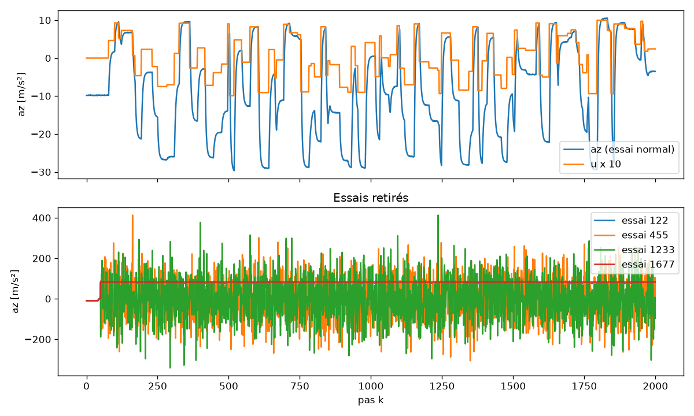
Une normalisation des données est nécessaire pour entraîner un réseau de neurones, mais elle est exclue pour l'interaction avec Simulink, qui travaille en unités physiques. Nous avons donc choisi des échelles fixes, écrites à la main dans l'observation de l'agent (partie II), plutôt qu'une normalisation apprise.
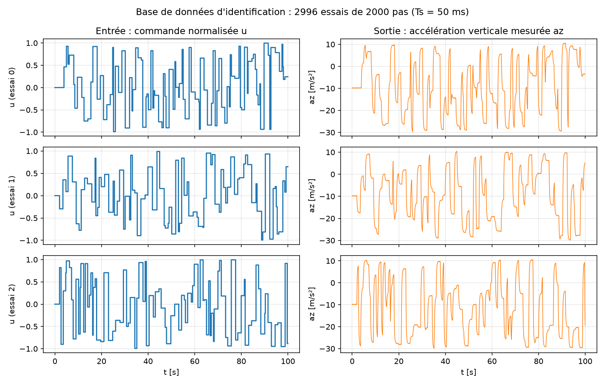
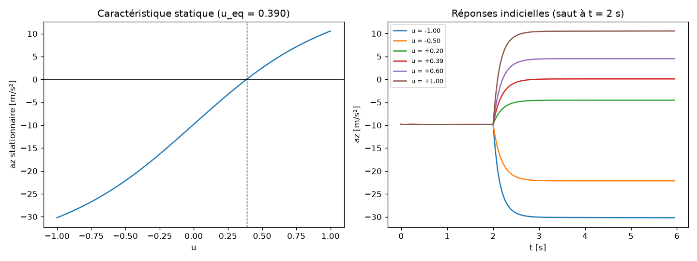
Objectif : disposer d'un contrôleur de référence capable de suivre le profil d'altitude 0 m, puis +0,5 m, puis −0,25 m, afin de le comparer à l'agent d'apprentissage par renforcement.
L'altitude est modélisée par un double intégrateur dont le gain de poussée k est identifié par moindres carrés sur l'ensemble des essais (numpy.linalg.lstsq en Python, opérateur \ en MATLAB), avec compensation de la gravité :
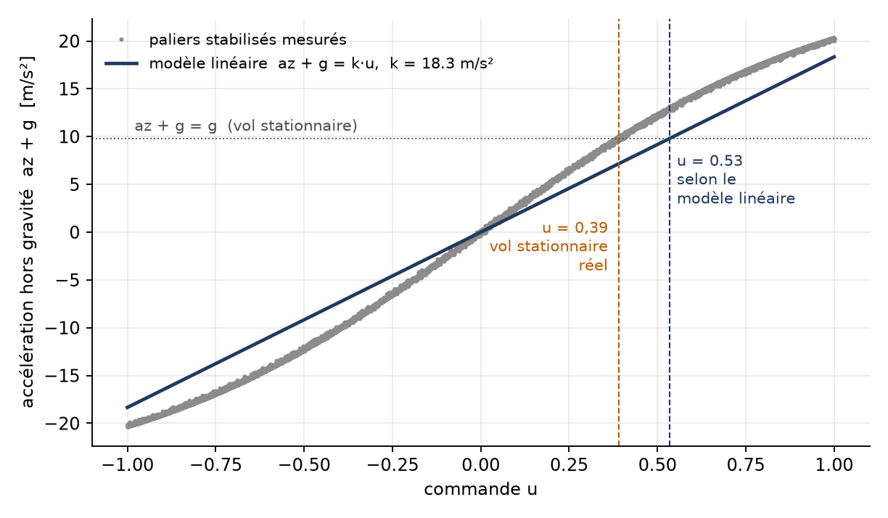
Le modèle linéaire ne connaît ni le point d'équilibre réel ni la courbure de la poussée. Le point d'équilibre est donc réintroduit par un terme d'anticipation (voir 2.2), et la pente locale plus forte que le gain identifié est un contributeur plausible de l'oscillation observée à la section 4 (hypothèse non testée).
Un premier régulateur LQR sans intégrale laissait une erreur statique : le drone se stabilisait à 0,9 m au lieu de 1 m. Le modèle est donc augmenté d'un état intégral, et la synthèse porte sur x = [z ; vz ; ∫e] avec la fonction dlqr :
| Élément | Valeur |
|---|---|
| Pondérations Q | diag(80 ; 25 ; 25) |
| Pondération R | 1 |
Gains optimaux dlqr | Kp = 2,32 · Kd = 1,10 · Ki = 0,98 |
| Gains retenus (× 0,8, marge de robustesse) | Kp = 1,86 · Kd = 0,88 · Ki = 0,79 |
La loi de commande est u = u0 − Kp(z − zref) − Kd vz − Ki ∫(z − zref), saturée à ±1, avec un terme d'anticipation de gravité u0 ≈ 0,38 à 0,4. Les pics de commande ont été éliminés de deux façons dans Simulink : la consigne passe par un filtre Transfer Fcn de constante τ = 1,2 s, et l'intégrateur est borné (anti-windup).
Objectif : faire pivoter le drone autour de son axe vertical grâce au couple de réaction aérodynamique des moteurs, sans altérer l'altitude.
Une réponse indicielle (uψ = 0,1 pendant 5 s) donne une vitesse angulaire croissante linéairement. Pour neuf impulsions de commande uψ·Δt, la vitesse de lacet atteinte est relevée (en rad/s, voir l'étape A) et une régression linéaire sans ordonnée à l'origine, y = k·x, en tire le gain :
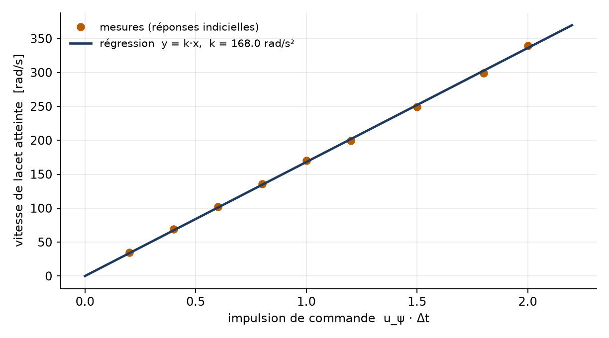
Le modèle [ψ ; ψ̇] est un double intégrateur de gain kψ, discrétisé à 50 ms puis augmenté d'un état intégral, comme pour l'altitude. La commande de lacet pénalise davantage l'effort que celle de l'altitude (R = 10 au lieu de 1) :
| Élément | Valeur |
|---|---|
| Gain kψ | 168 rad/s² par unité de commande |
| Pondérations Q / R | diag(120 ; 40 ; 30) / 10 |
Gains dlqr | Kp = 0,252 · Kd = 0,125 · Ki = 0,097 |
Pour atténuer les oscillations de la commande face à une consigne en rampe, un lissage de la référence a été intégré au schéma Simulink, comme pour l'altitude.
La régression a d'abord été lue comme une pente en °/s (soit 168 °/s², environ 2,93 rad/s²). Les essais de l'étape A montrent que UAV_model travaille en unités SI, angles en radians, et que le gain de lacet vaut environ 170 rad/s² par unité de commande, ce que confirment l'identification de la section 11 (172,9 par ARX, 172,5 par impulsions). La valeur 168 est donc un gain en rad/s², et les gains du tableau 2 sont corrects pour ψ en radians. Dans ident_psi.m, la conversion 2.93*180/3.14 redonne ce nombre sans qu'il faille le lire en degrés.
Le LQI n'intervient pas dans l'apprentissage : il sert de point de comparaison. Il doit donc être réglé pour les mêmes conditions que l'agent, dont la boucle est échantillonnée à 50 ms.
Avec les gains de la section 2, le LQI oscille à 1,5 Hz dès qu'on le simule dans l'environnement échantillonné à 50 ms (amortissement d'environ 2 %).
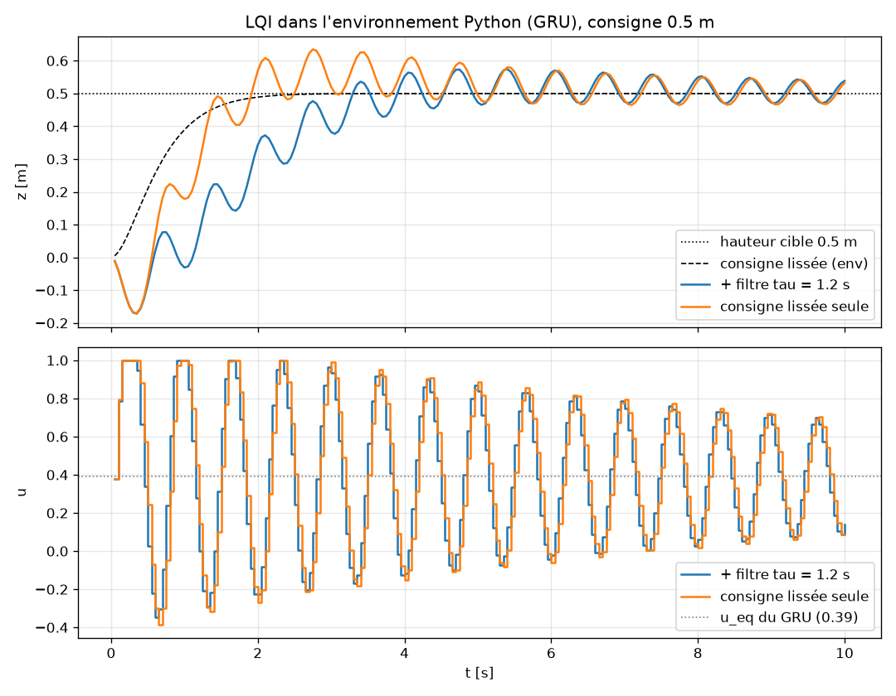
Simu_LQ.slxLa boucle de Simu_LQ est continue, alors que celle de EINT_RL_closed_loop est échantillonnée à 50 ms. Un retard de 75 ms coûte environ 40° de marge de phase à 1,5 Hz. Les essais ont été faits sur des copies des fichiers.
| Cas | z max | Oscillation entre 5 et 10 s | z final |
|---|---|---|---|
Boucle continue (Simu_LQ tel quel) | 0,522 m | 0,019 m | 0,502 m |
| Bloqueurs de 10 ms | 0,522 m | 0,018 m | 0,502 m |
| Bloqueurs de 50 ms | 0,579 m | 0,087 m | 0,526 m |
| Python (GRU), 50 ms | 0,592 m | 0,114 m | 0,532 m |
| Bloqueurs de 50 ms, gains ÷ 2 | 0,542 m | 0,024 m | 0,502 m |
| Python (GRU), gains ÷ 2 | 0,546 m | 0,025 m | 0,502 m |
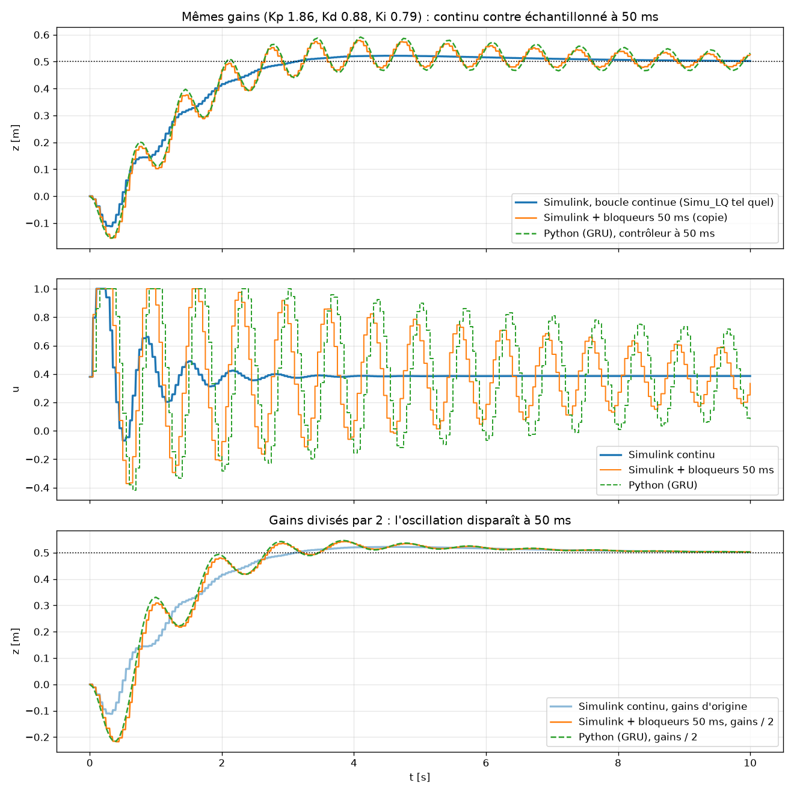
Ces gains ont été réduits « à la main » et non recalculés. Un dlqr sur un modèle à 20 Hz incluant l'actionneur (τ ≈ 0,2 s) et le retard d'un pas serait plus rigoureux. Il est proposé, non réalisé.
Pour entraîner un agent, il faut simuler des milliers de vols rapidement. Un GRU d'une couche et 64 neurones reçoit u(k−1) et prédit az. Il est exporté en numpy (gru_drone.npz). L'entraînement dure 150 époques, avec 3 graines et un découpage 70 / 15 / 15.
| Modèle | RMSE sur az | Dérive de z après 10 s |
|---|---|---|
| GRU (notre modèle) | 0,0450 m/s² (plancher du bruit : 0,044) | 0,21 m |
| RNN du groupe (v3) | 0,0906 m/s² | 1,13 m |
La RMSE est au niveau du bruit de mesure : avec ces données, aucun modèle ne peut faire mieux. La dérive de z, obtenue en double-intégrant az, est cinq fois plus faible que celle du modèle du groupe.
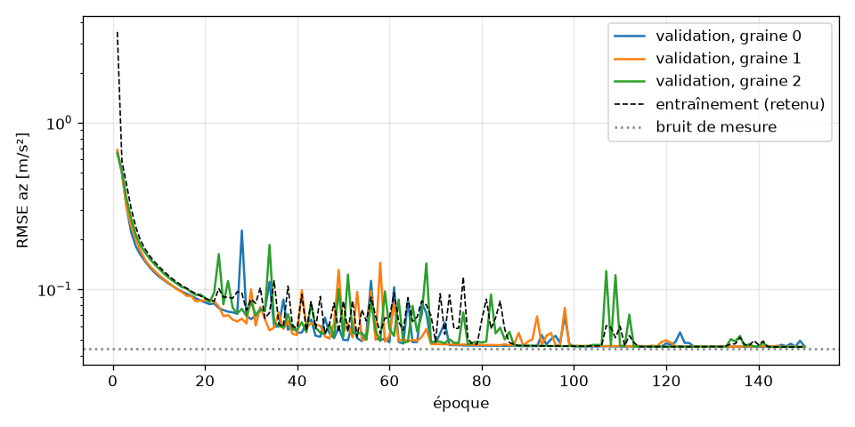
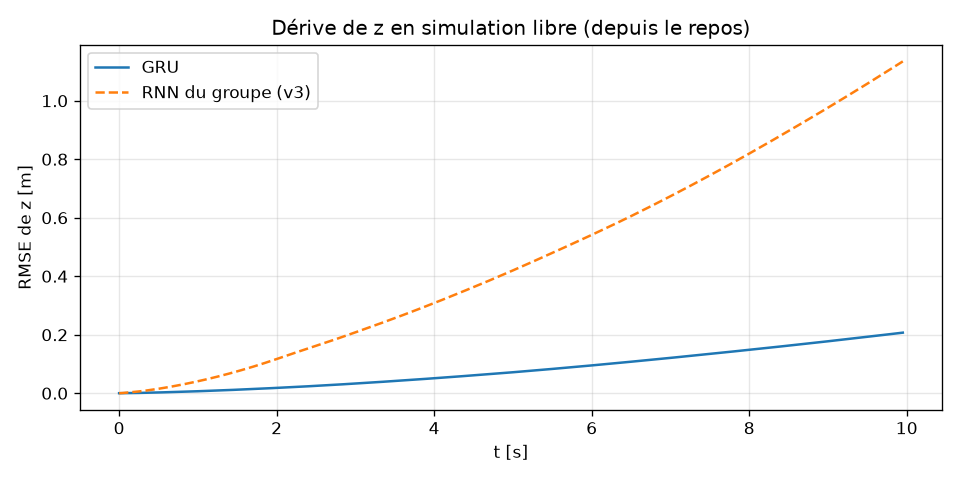
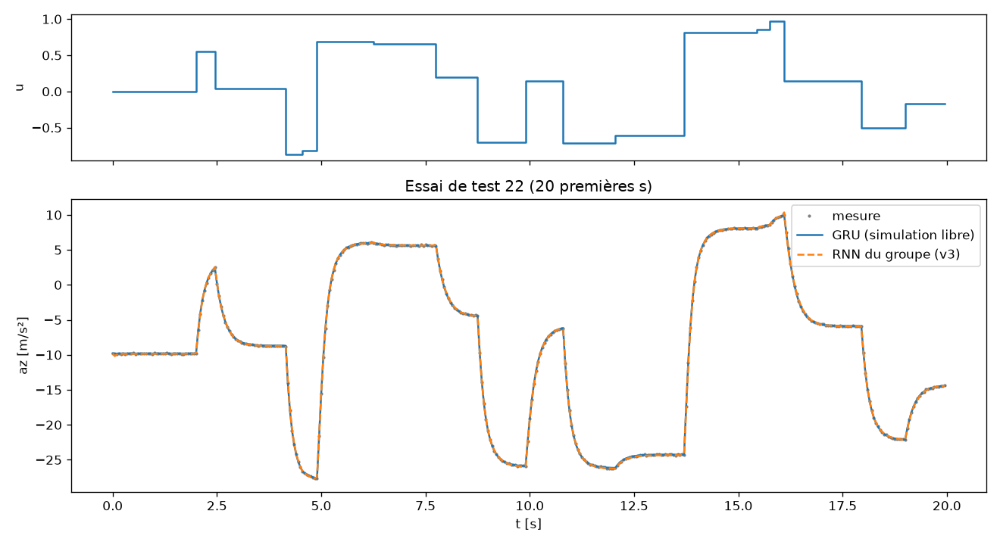
Chaque choix de drone_env.py a été fait pour pouvoir être recopié à l'identique dans rl_controller.m, car c'est ce fichier qui fait voler l'agent dans Simulink.
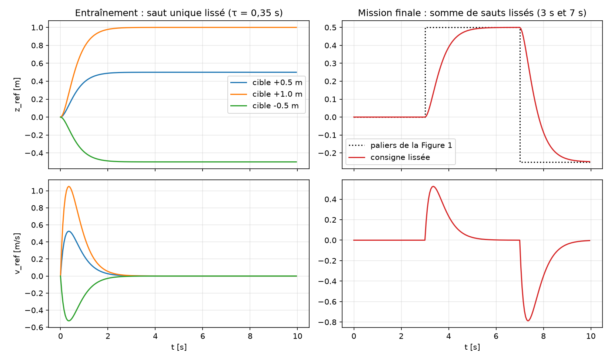
L'agent est une fonction « observation → u » sans état interne : toute la mémoire (l'intégrale) est calculée à côté, ce qui rend l'export vers MATLAB possible en quelques lignes. Il reçoit six grandeurs :
L'intégrale n'intègre que si |e| < 0,1 m et reste bornée à ±0,5 m·s. Sans cette règle, elle saturait à chaque montée et ne portait plus d'information : l'agent avait appris à l'ignorer.
La récompense est la somme de cinq termes bornés. Un vol raté coûte au pire une centaine de points, un vol parfait en rapporte environ 200 ; c'est ce qui a stabilisé l'apprentissage.
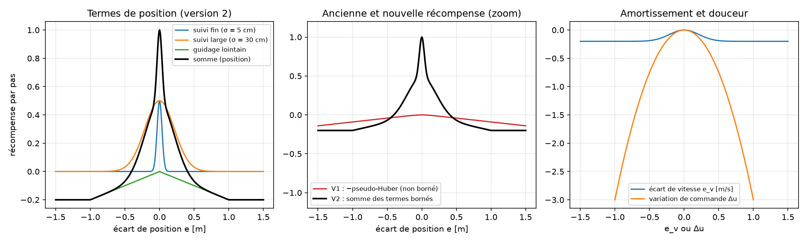
Premier entraînement avec une récompense plus simple (V1, opposé d'un pseudo-Huber de 10 cm et pénalité de 0,5 sur Δu) : 100 000 pas, 28 minutes sur CPU, réseaux 2×256, entropie automatique. Le meilleur agent date de 30 000 pas. L'apprentissage est ensuite instable : le rendement vaut −774 à 20 000 pas puis −21 680 à 90 000 pas, quand le drone s'éloigne de plus de 11 m.
| Contrôleur | Rendement | RMSE lissée | Dépassement | Erreur finale | Agitation de u |
|---|---|---|---|---|---|
| SAC (run 1) | −39,4 | 0,072 m | 0,082 m | 0,039 m | 0,024 |
| LQI (gains ÷ 2) | −43,5 | 0,085 m | 0,119 m | 0,001 m | 0,022 |
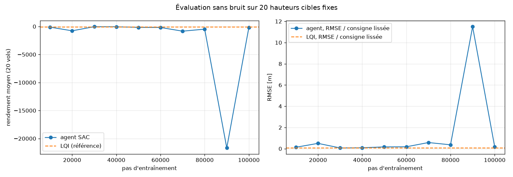
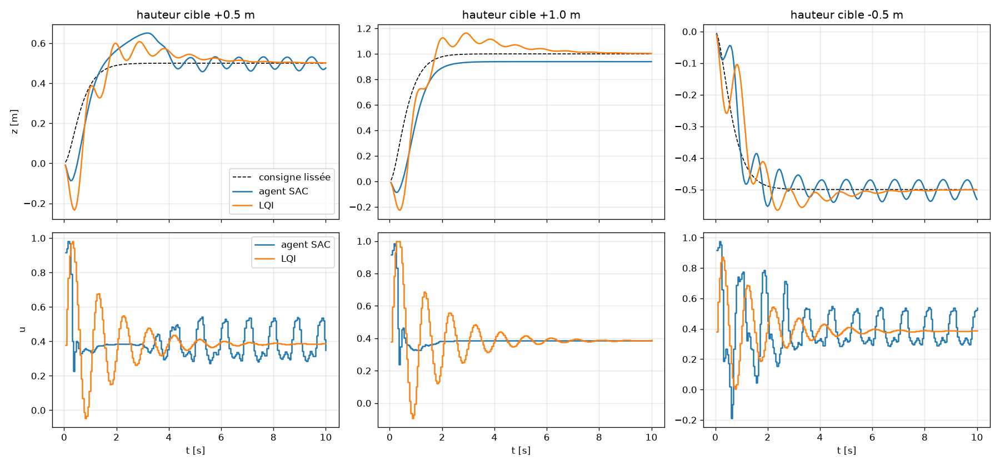
La décomposition de la récompense sur les vols montre que l'agent fait exactement ce que la récompense lui demande :
Nous avons adopté la récompense bornée de la section 6.3, ajouté la vitesse de consigne à l'observation, et rendu l'intégrale conditionnelle. Nous sommes passés à PPO avec 16 drones en parallèle : le GPU n'aide pas, car SAC fait environ 70 mises à jour par seconde quel que soit l'appareil (le temps est dans le code Python, pas dans le calcul).
| Configuration | Transitions par seconde |
|---|---|
| SAC, CPU, 1 drone (run 1) | 67 |
| SAC, GPU, 1 drone | 69 |
| SAC, GPU, 16 drones | 284 |
| PPO, CPU, 16 drones | 5 248 |
| PPO, GPU, 16 drones | 3 330 |
Le premier essai PPO a échoué (RMSE de 160 m) : une politique initialisée avec une sortie à 0 commande u = 0, donc la chute libre, et les gaussiennes de la récompense sont plates loin de la cible. D'où le terme linéaire −0,2·min(|e|, 1) et l'initialisation du biais de sortie à 0,39, pour que l'agent démarre en vol stationnaire.
| Contrôleur | Rendement | RMSE lissée | Dépassement | Erreur finale | Agitation de u |
|---|---|---|---|---|---|
| Agent PPO | 187,0 | 0,042 m | 0,009 m | 0,0008 m | 0,012 |
| LQI (gains ÷ 2) | 148,9 | 0,085 m | 0,119 m | 0,0014 m | 0,022 |
| SAC (run 1, récompense V1) | non comparable | 0,072 m | 0,082 m | 0,039 m | 0,024 |
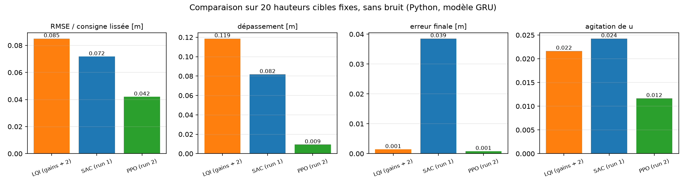
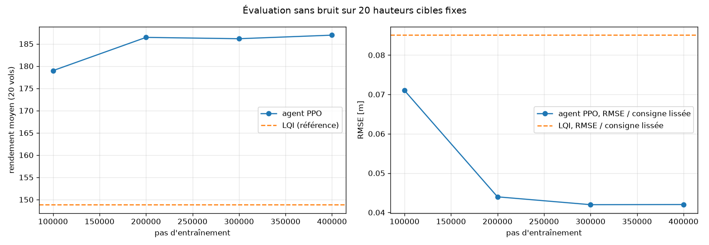
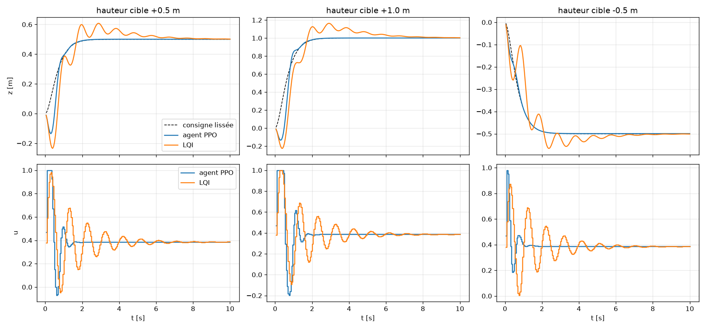
Dans le modèle Python, la robustesse au bruit est bonne pour le suivi (RMSE lissée de 0,042 à 0,045 m contre 0,085 à 0,089 m pour le LQI), mais l'agitation de u monte à 0,189 à fort bruit (0,05) contre 0,069 pour le LQI. C'est le défaut principal de l'agent.
rl_controller.m est appelé à chaque pas par un bloc MATLAB Function de EINT_RL_closed_loop.slx. Les fonctions mission() et observation() devaient reproduire Python à l'identique.
check_controller compare MATLAB à traj_model.mat (tolérance 1e-9 sur la consigne, 1e-5 sur les observations, 1e-4 sur u). Il a d'abord signalé cinq erreurs de lecture des mesures ; après correction : « Check OK ».persistent avance au bon rythme. Le contrôle sur 200 pas ne pouvait pas le détecter.| Simulateur | RMSE lissée | z minimum | z final |
|---|---|---|---|
| Python (GRU) | 0,046 m | −0,135 m | 0,5008 m |
Simulink (UAV_model) | 0,043 m | −0,124 m | 0,5008 m |
L'écart est de 4 mm en RMSE (25 mm au maximum, pendant la montée) : l'agent, entraîné uniquement sur le GRU, se transfère sans perte au vrai modèle.
g_noise | RMSE lissée | Dépassement | Écart-type de z | Agitation de u |
|---|---|---|---|---|
| 0 | 0,043 m | 0,001 m | 0,000 | 0,012 |
| 0,1 | 0,043 m | 0,013 m | 0,005 | 0,028 |
| 0,3 | 0,045 m | 0,036 m | 0,014 | 0,057 |
| 1 | 0,063 m | 0,124 m | 0,047 | 0,174 |
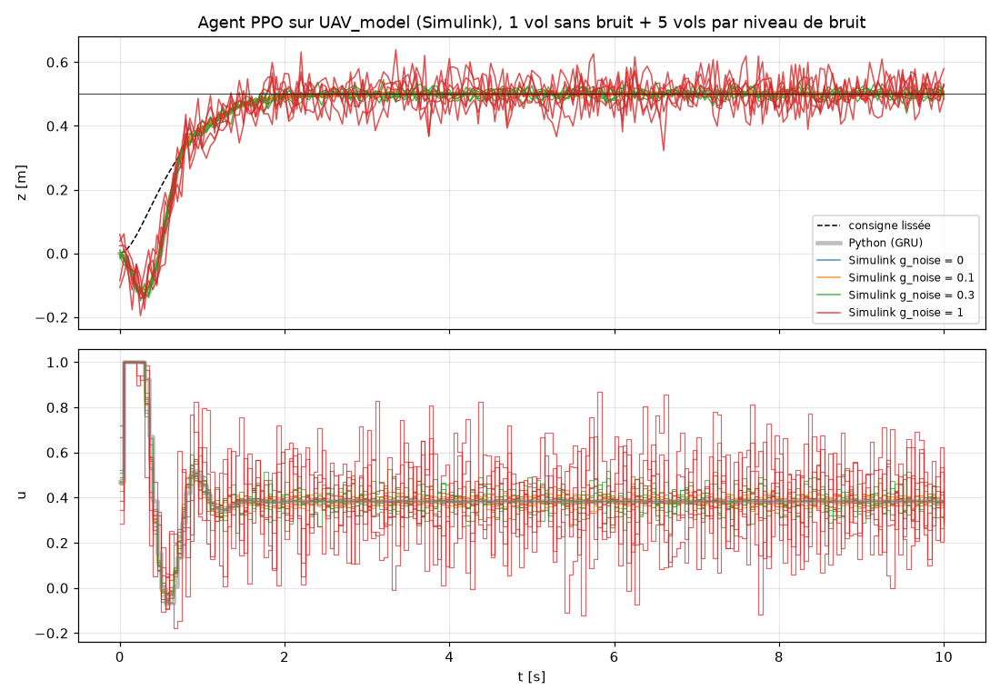
UAV_model : un vol sans bruit et cinq vols par niveau de bruit. Le départ est identique : chute libre, u = 1 pendant 0,3 s, plongeon à −0,12 m, puis l'agent coupe presque les gaz pour ne pas dépasser.À g_noise = 1, l'écart-type de z est surtout du bruit de capteur : rl_log enregistre le z mesuré, celui que reçoit le contrôleur.
La mission consiste à poser le drone à 0 m, monter à 0,5 m, puis descendre à −0,25 m. Le sujet ne donne pas les instants : le groupe a choisi des sauts à 3 s et 7 s.
Faut-il réentraîner ? Non. Les observations de l'agent sont relatives (erreurs, vitesses) et les cibles d'entraînement couvraient des écarts jusqu'à 1,5 m, donc les sauts de +0,5 m et −0,75 m sont dans son domaine. Un test préalable en Python l'avait confirmé. Les adaptations, qui ne changent pas l'entraînement, sont les suivantes : MISSION_FIG1 dans drone_env.py, un script export_mission.py qui réexporte traj_model.mat, et une fonction locale consigne(t) dans rl_controller.m.
| Bruit sur az | Bruit sur z | |
|---|---|---|
| Données réelles | 0,044 m/s² | — |
Simulink, g_noise = 0,1 | 0,053 m/s² | 0,005 m |
Simulink, g_noise = 0,2 | 0,10 m/s² | 0,010 m |
g_noise | RMSE / consigne lissée | Dépassement à 0,5 m | vz à l'arrivée au sol | Agitation de u |
|---|---|---|---|---|
| 0 | 0,029 m | 1 mm | −0,024 m/s | 0,018 |
| 0,1 (réaliste) | 0,030 m | 10 mm | −0,032 m/s | 0,032 |
| 0,2 | 0,031 m | 18 mm | −0,033 m/s | 0,046 |
La RMSE par rapport aux paliers bruts vaut 0,21 m : elle est élevée parce qu'aucun drone ne peut sauter instantanément. Nous utilisons la consigne lissée comme référence et indiquons les deux valeurs.
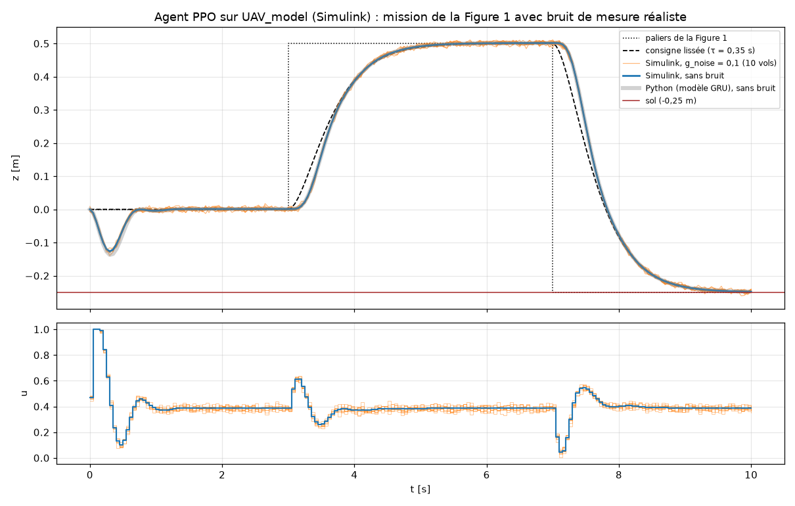
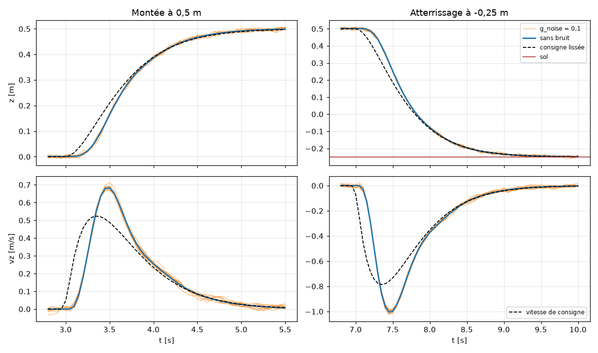
L'atterrissage est doux sans terme dédié dans la récompense : la consigne lissée arrive à −0,25 m avec une vitesse nulle et l'agent suit aussi la vitesse de consigne. Cette douceur est réglable par τ sans réentraîner. Trois limites subsistent : un retard d'environ 0,15 s à chaque palier (les moteurs répondent en environ 0,2 s) ; une erreur statique de 6 mm au sol, que l'intégrale n'a pas le temps de corriger avant 10 s ; et un plongeon initial à −0,12 m, dû au départ en chute libre de Simulink.
La suite du projet ajoute une rotation autour de l'axe vertical (un tour complet à vitesse constante pour « scanner », à la place des 90° d'abord prévus), puis une avance en x. La mission élargie proposée est la suivante : drone posé de 0 à 2 s, montée à 0,5 m, tour complet à vitesse constante (ω ≈ 0,79 rad/s) entre 5 et 13 s, atterrissage à 15 s, soit un vol de 20 s. Cette partie présente les premières étapes ; elle est complétée au fil de l'avancement.
Pour piloter le lacet, il faut connaître les sorties de UAV_model, leurs unités et la façon de mélanger les quatre moteurs. Un modèle Simulink de test, construit par script et jamais sauvegardé, fait tenir 0,5 m au LQI d'altitude puis ajoute des impulsions différentielles de 0,005 à 0,02 sur les moteurs, selon trois motifs, sans bruit.
La sortie 19 (all_outputs) suit un autre ordre : x y z vx vy vz ax ay az φ θ ψ ωx ωy ωz ω̇x ω̇y ω̇z. Au premier essai, cela a conduit à lire az à la place de ψ.
Le drone est en configuration « + » : les moteurs 1 et 3 sont sur un axe, les moteurs 2 et 4 sur l'autre. Les quatre commandes sont obtenues à partir des commandes d'altitude (uz), de lacet (uψ), de tangage (uθ) et de roulis (uφ) :
| Axe | Motif (moteurs 1, 2, 3, 4) | Effet observé |
|---|---|---|
| Lacet | (+, −, +, −) | +ωz |
| Tangage | (−, 0, +, 0) | +θ, puis +x (ẍ ≈ +g·θ) |
| Roulis | (0, +, 0, −) | +φ, puis −y (ÿ ≈ −g·φ) |
Les motifs diagonaux (+, +, −, −) et (+, −, −, +) donnent des rotations en diagonale, avec la même amplitude sur φ et θ : c'est ce qui révèle la configuration « + ».
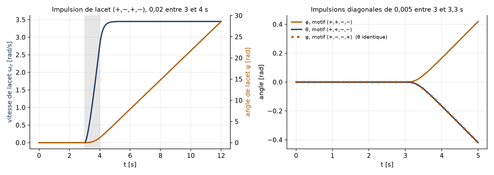
ident_psi.m).g_noise = 0,1 : il donne 0,053 m/s² sur az (données réelles : 0,044) et 0,005 m sur z, le bruit utilisé à l'entraînement.Comme pour l'altitude, il faut des données pour identifier un modèle du lacet. Le LQI d'altitude fait tenir 0,5 m ; à partir de t = 3 s, le drone est excité pendant 60 s avec uψ = excitation − 0,006·ωz. L'excitation est multi-niveaux : des niveaux uniformes dans ±amp, maintenus de 0,05 à 2 s, avec amp tirée entre 0,002 et 0,03 selon l'essai. Le petit amortissement ajouté (constante de temps d'environ 1 s) empêche ωz de dériver, puisque le lacet est sans frottement.
Le bruit est g_noise = 0,1. Il y a 150 essais de 60 s, soit 2,5 h de vol simulé, calculées en 72 s. Les données sont dans donnees/lacet/donnees_lacet.mat.
Un GRU de 32 neurones, d'entrée uψ(k−1)/0,03 et de sortie ω̇z/5, est comparé à un modèle linéaire ARX(2,6) identifié par moindres carrés. Le découpage se fait par essai (70 / 15 / 15), avec 3 graines et une évaluation en simulation libre (22 s d'entraînement sur GPU).
| Modèle | RMSE sur ω̇z | Dérive de ωz en 10 s | Dérive de ψ en 10 s |
|---|---|---|---|
| ARX(2,6) | 0,0064 rad/s² | 0,0045 rad/s | 0,034 rad (1,9°) |
| GRU (32 neurones) | 0,0067 rad/s² | 0,0071 rad/s | 0,043 rad (2,5°) |
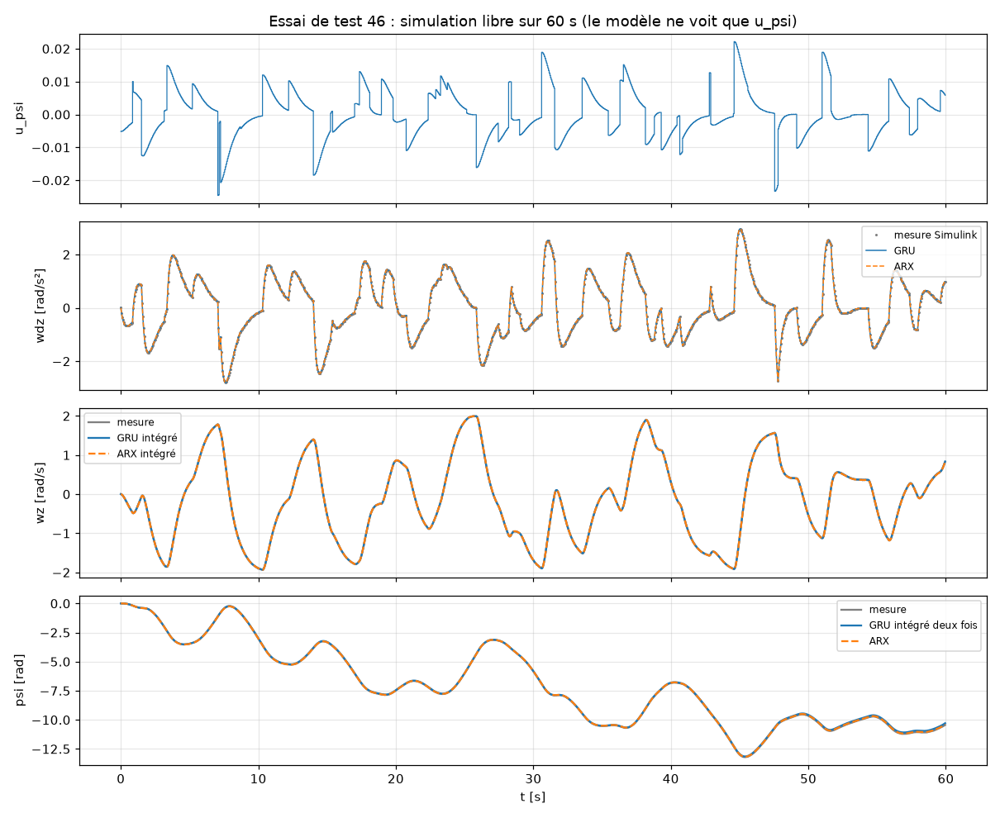
Le gain est constant, de 172 à 173 rad/s² par unité, pour des impulsions de 0,003 à 0,03 et dans les deux sens. Le lacet est donc linéaire, contrairement à z qui suit un tangente hyperbolique, car c'est une petite variation autour du vol stationnaire. Trois méthodes indépendantes donnent ce gain : l'ARX (172,9), les impulsions (172,5) et ident_psi.m (168).
Les coefficients de l'ARX (a = [0,413 ; 0,285], b = [38,3 ; 14,0 ; ≈ 0 ; …]) serviront à concevoir par dlqr un régulateur de lacet à 20 Hz, comme référence linéaire. Le choix du modèle pour l'environnement de lacet (GRU ou ARX) est en cours ; le GRU est recommandé par cohérence avec l'altitude.
La chaîne utilisée pour l'altitude (données, GRU, environnement, PPO, export, vérification, Simulink) est reprise telle quelle pour le lacet, soit environ 30 minutes de calcul au total.
g_noise = 0,1 sur les données de lacet : 0,0045 rad sur ψ, 0,0046 rad/s sur ωz, 0,042 rad/s² sur ω̇z. L'entraînement utilise 0,005 ; 0,005 ; 0,05.YawEnv (yaw_env.py), de même structure que DroneEnv : action a ∈ [−1 ; 1] avec uψ = 0,03·a (jusqu'à environ 5 rad/s²), GRU puis intégration par trapèzes (ω̇z, ωz, ψ), vol de 400 pas (20 s).La consigne est une suite de sauts de vitesse de lacet, chacun lissé par un 2e ordre critique (τ = 0,35 s). Les formules sont fermées, et ψref est l'intégrale exacte de ωref :
La mission du scan est une vitesse de 2π/8 ≈ 0,785 rad/s entre 5 et 13 s, d'où ψref(20 s) = 2π exactement. L'entraînement se fait sur des missions aléatoires : 1 à 4 sauts de vitesse, au moins 1 s d'écart, 40 % de retours à l'arrêt, sinon une vitesse dans ±1,5 rad/s.
L'observation compte six grandeurs : (ψref − ψ)/0,5, ωz, ω̇z,prev/5, l'action précédente, l'intégrale conditionnelle (|e| < 0,1 rad, borne 0,5) divisée par 0,5, et ωref − ωz. La récompense a la même forme que pour l'altitude, avec des échelles en radians :
Les tests de l'environnement réussissent tous : check_env ; impulsion a = 0,5 pendant 1 s donnant ωz = 2,584 rad/s (attendu 2,58), constant ensuite ; écart de 1,7·10−4 rad entre ψref et l'intégrale numérique de ωref (erreur des trapèzes) ; ψref(20 s) = 6,28319 ; observation identique à une réplique écrite à la main.
Le LQI de lacet de ident_psi.m (Kp = 0,252 ; Kd = 0,125 ; Ki = 0,097) sert de référence. Sur le scan, en Python, il atteint une RMSE de 0,131 rad avec un dépassement de 0,27 rad (15°) après l'arrêt de la rotation : pendant la rampe, l'erreur de traînage charge l'intégrale, qui fait dépasser à l'arrêt. Diviser les gains par 2 donne le même résultat.
L'agent est entraîné par PPO, avec 16 drones en parallèle, nsteps = 512, des lots de 1024, un réseau 64×64 et un bruit d'entraînement : 1 million de transitions en 3,6 minutes (environ 4 700 transitions par seconde). Le meilleur agent est obtenu à 500 000 transitions, puis la courbe reste sur un plateau.
| Contrôleur | Rendement | RMSE (20 missions) | Erreur max | Scan : RMSE | Scan : erreur max |
|---|---|---|---|---|---|
| Agent PPO de lacet | 380,6 | 0,0142 rad | 0,066 rad | 0,0116 rad | 0,046 rad |
| LQI de lacet | 263,8 | 0,137 rad | 0,366 rad | 0,131 rad | 0,270 rad |
Avec bruit (5 vols du scan), l'agent garde une RMSE de 0,0118 rad avec une agitation de la commande de 0,035, contre 0,131 rad et 0,073 pour le LQI.
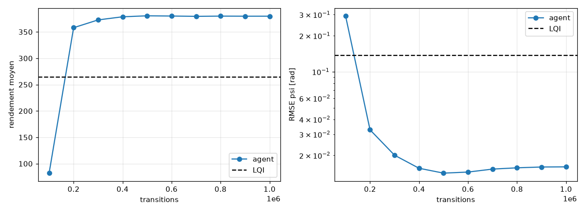
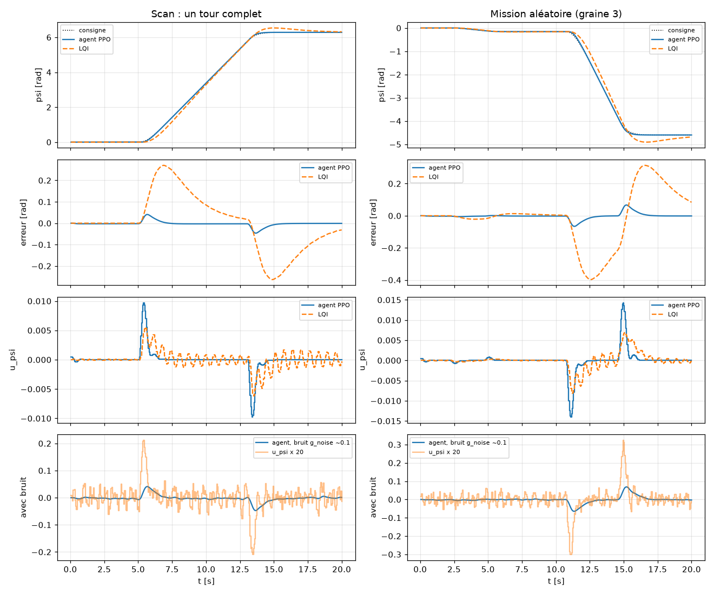
Le LQI accumule l'erreur de traînage dans son intégrale et dépasse de 15° à l'arrêt. L'agent suit la vitesse de consigne (observation ωref − ωz) et n'utilise l'intégrale que près de la consigne, grâce à l'intégration conditionnelle.
Une nouvelle boucle EINT_RL_closed_loop_zpsi.slx est créée par script, sans toucher aux fichiers fournis de rl_interface/ : les dix-huit sorties nommées passent par un échantillonneur à 50 ms, puis par un contrôleur rl_controller_zpsi qui calcule les quatre moteurs. Le contrôleur applique les deux politiques (policy_z et policy_psi) et le mélangeur de la section 10 :
Il garde les valeurs du pas précédent (az, ω̇z, uz, aψ), nulles au premier pas comme les UnitDelay. La mission d'altitude (MISSION_AVANCEE_Z) monte à 0,5 m à partir de 2 s et atterrit à 15 s, pour un vol de 20 s, avec le scan de ψ entre 5 et 13 s. L'agent d'altitude est inchangé ; seule sa consigne change. L'export est assuré par export_avance.py.
Vérifications. « Vérification OK » : le contrôleur MATLAB et Python coïncident sur 400 pas (consignes à 1e-9, observations à 1e-5, commandes à 1e-4). Le rejeu hors ligne des mesures de chaque vol redonne exactement les commandes (écart 0) : le contrôleur est appelé une seule fois par pas.
| Cas | RMSE z | RMSE ψ | Erreur ψ max | Erreur ψ pendant le scan (6–12 s) | z pendant le scan | vz au sol |
|---|---|---|---|---|---|---|
| Sans bruit | 0,0208 m | 0,0116 rad | 2,65° | 0,39° | 0,5015 m (σ 0,00 cm) | −0,023 m/s |
g_noise = 0,1 | 0,0213 m | 0,0125 rad | 3,04° | 0,48° | 0,5016 m (σ 0,47 cm) | −0,040 m/s |
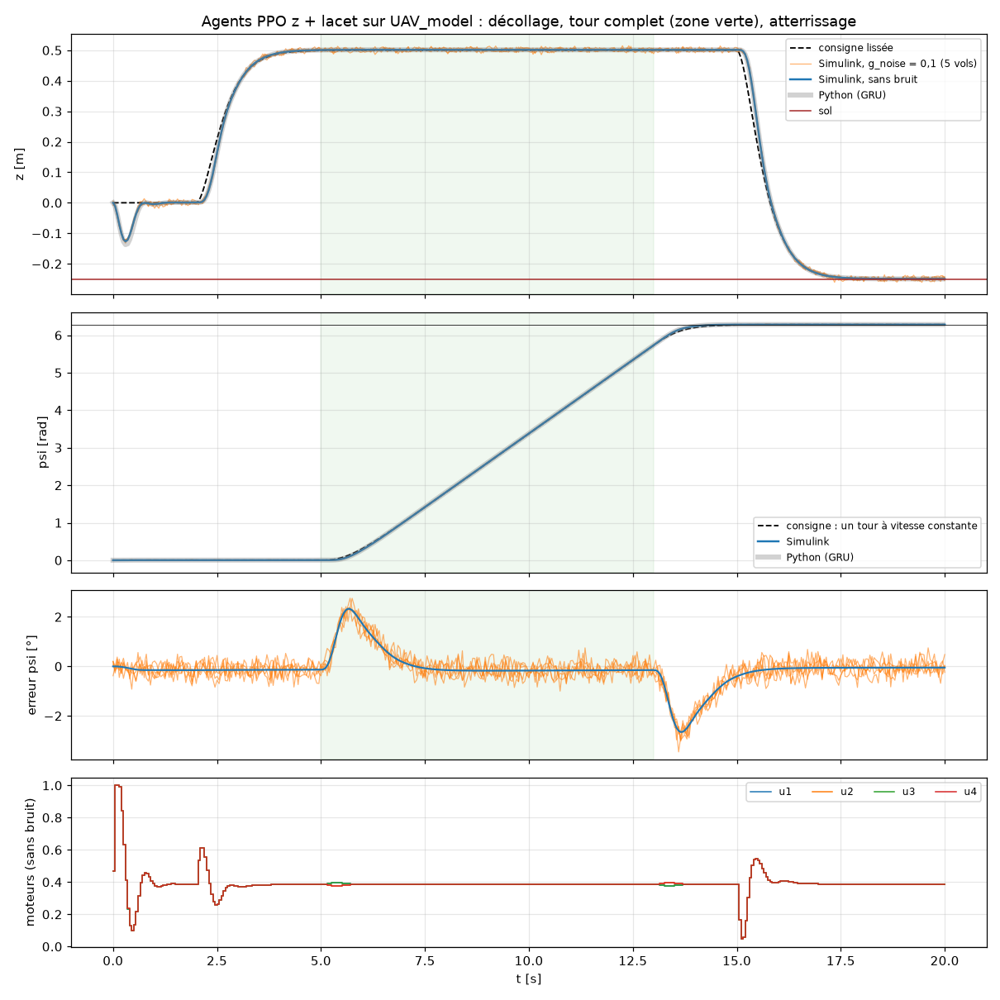
L'angle final vaut 6,275 à 6,287 rad pour un objectif de 2π ≈ 6,283. L'écart entre Simulink et Python sans bruit est au plus de 1,4 cm sur z et de 0,0003 rad sur ψ : le GRU de lacet est quasi exact. Les erreurs maximales (environ 2,5°) apparaissent au début et à la fin de la rotation et correspondent au retard des moteurs d'environ 0,2 s, comme pour l'altitude ; le reste du temps, l'erreur est inférieure à 0,5°.
Pour avancer en x, il faut incliner le drone : une boucle interne d'attitude (C1, méthode classique) reçoit un angle de consigne, et une boucle externe par apprentissage (C2) commandera cet angle à partir de la position en x. Cette étape suit le même enchaînement que le lacet : données, modèle, régulateur, validation sur Simulink.
Dans UAV_model.slx, le bloc de bruit de θ (« Band-Limited White Noise7 ») a pour covariance seed_theta au lieu de 0,0001 comme les 17 autres sorties. Or random_init.m tire seed_theta entre 1 et 10 000. Le bruit de θ a donc un écart-type d'environ 30 rad à g_noise = 0,1 (30,8 rad mesurés sur 150 essais), et encore environ 3 rad à 0,01. Un premier PD bouclé sur cette sortie a retourné le drone dès le décollage.
Le simulateur n'est pas modifié : θ est estimé en intégrant ωy par trapèzes. Le bruit de ωy est d'environ 0,005 rad/s, soit une dérive d'environ 0,005 rad en 20 s. Vérification : ax = 9,96·θest (g = 9,81), avec un résidu de 0,027 m/s².
Nous avons corrigé ce bloc de bruit (covariance de 0,0001) : θ se mesure maintenant directement. L'estimation par intégration de ωy a servi aux données et aux essais de cette section, mais plus à partir de l'étape C2.
150 essais de 60 s, g_noise = 0,1 (gen_donnees_attitude.m, ctrl_attitude.m). Le drone tient z = 0,5 m (LQI) et ψ = 0 (PD). Les commandes uθ et uφ sont excitées simultanément et indépendamment (multi-niveaux, |u| ≤ 0,006, paliers de 0,05 à 2 s), avec un PD faible sur chaque angle (Kang = 0,0235 ; Kw = 0,0165) pour empêcher la dérive. Les angles restent sous 0,28 rad. Le fichier donnees/attitude/donnees_attitude.mat pèse 30 Mo. Le mélangeur, vérifié, est uθ = (u3 − u1)/2 et uφ = (u2 − u4)/2 : +uθ donne +θ et +uφ donne +φ.
Comme pour le lacet, où l'ARX valait le GRU, un modèle ARX(2,6) est identifié pour chaque axe (identification_attitude.py), de la commande vers l'accélération angulaire.
| Axe | Gain statique | RMSE sur l'accélération angulaire | Dérive de ω / de l'angle en 10 s |
|---|---|---|---|
| Tangage : uθ → ω̇y | 171,8 rad/s² | 0,0046 rad/s² | 0,0035 rad/s ; 0,023 rad |
| Roulis : uφ → ω̇x | 171,8 rad/s² | 0,0047 rad/s² | 0,0039 rad/s ; 0,024 rad |
La RMSE de 0,0046 rad/s² correspond au niveau du bruit de mesure de ω̇ (environ 0,0047), pour une sortie d'écart-type 0,238 : le modèle ne laisse pas de résidu exploitable. Les pôles 0,775 et −0,468 traduisent un retard moteur du premier ordre d'environ 0,2 s (0,775 = e−0,05/0,197). Le gain et la dynamique sont les mêmes que pour le lacet (172 rad/s²). Le couplage entre axes est nul (0,01 % du gain direct).
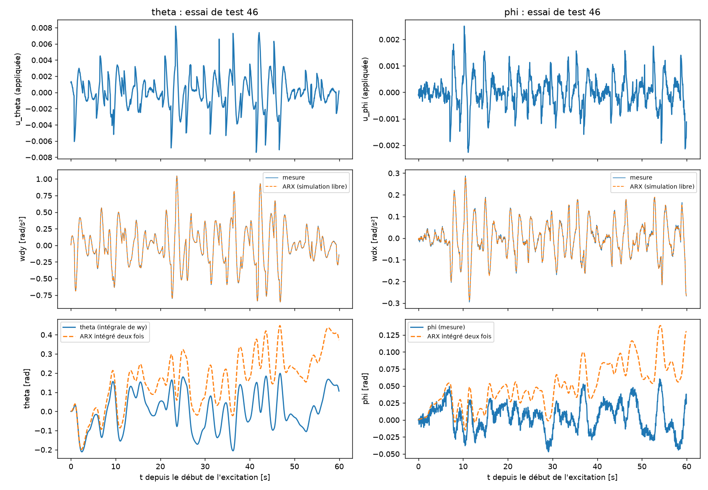
Modèle de translation (pour C2). ax = +9,907·θ + 0,0024·vx (résidu 0,052 m/s²) et ay = −9,911·φ (résidu 0,046 m/s²) : il n'y a pas de frottement mesurable, la translation est un double intégrateur commandé par l'angle.
L'état est de dimension 9 : [angle − réf, ω, ω̇(k), ω̇(k−1), u(k−1 à k−5)]. Tout est mesuré ou mémorisé, donc sans observateur ; le même gain K sert pour θ et φ. La dynamique de ω et de l'angle est obtenue par trapèzes à partir de l'ARX, et K par dlqr (lqi_attitude.m). Trois variantes sont comparées sur un échelon de 0,1 rad, sur le modèle ARX :
| Régulateur | Montée | Dépassement | Stabilisation à 2 % |
|---|---|---|---|
| LQI classique (q = 100 / 5 / 20, R = 5·104) | 0,65 s | 25 % | 7,0 s |
| LQI conditionnel (intégrale seulement si |e| < 0,02 rad) | 0,75 s | 5,2 % | 2,2 s |
| LQ sans intégrale, retenu (qang = 100, qw = 10, R = 2·104) | 0,85 s | 0,4 % | 1,45 s |
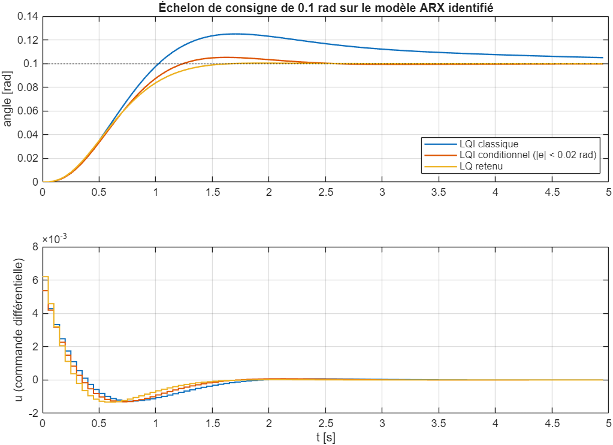
L'identification ne montre aucun couple parasite : u = 0 donne ω̇ = 0, et sans bruit l'attitude reste exactement à 0. L'intégrale n'a donc rien à compenser et ne fait que créer du dépassement, le même phénomène que pour le LQI de lacet (15°).
Le gain retenu est K = [0,061991 ; 0,042637 ; 0,0036989 ; 0,0015518 ; 0,078459 ; 0,0019356 ; 0,0015677 ; 0,0013773 ; 0,0010012], avec des pôles de module au plus 0,855 et |u| maximal de 0,0062 sur l'échelon.
Le drone décolle à 0,5 m, ψ est tenu à 0 et les consignes sont des échelons : θ de 0 à 0,1 (3 s), −0,1 (5 s) puis 0 (7 s) ; φ de 0 à 0,1 (4 s), 0 (6 s) puis −0,05 (8 s). L'écart entre Simulink et la prédiction de l'ARX en boucle fermée est :
| Cas | θ | φ |
|---|---|---|
| Sans bruit | 0,0001 rad | 0,0001 rad |
g_noise = 0,1 | 0,0005 rad | 0,0053 rad (bruit de mesure de φ) |
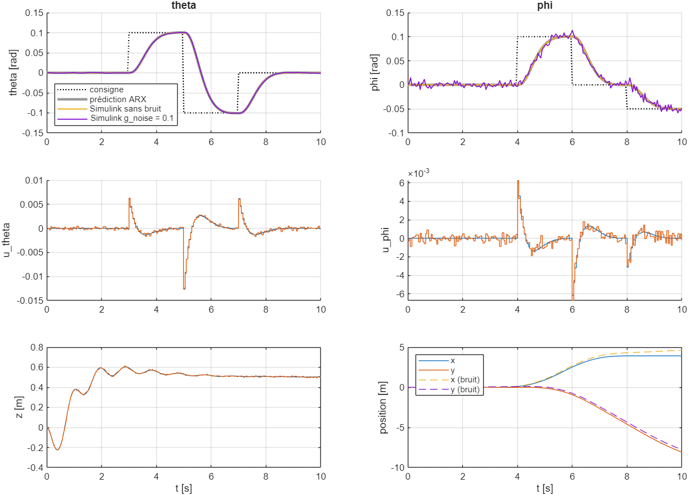
L'altitude reste dans [0,49 ; 0,59] m et |ψ| ne dépasse pas 0,012 rad. Effet sur la translation, qui sera la cascade de C2 : l'impulsion de θ (+0,1 puis −0,1) déplace le drone de +4 m en x puis l'arrête ; +φ le fait partir en −y (8 m en 4 s). Le creux de z à −0,22 m au décollage vient du LQI d'altitude simplifié (gains ÷ 2) utilisé pour ces essais ; en C2, z sera tenu par l'agent PPO.
Nous avons d'abord conçu une commande en cascade pour avancer en x (commande_LQ/test_LQI_x.slx, gains dans gains_LQI.m), puis rassemblé tous les contrôleurs classiques dans une mission complète (commande_LQ/mission_LQ/) : décollage, tour sur soi-même, poursuite puis atterrissage sur une voiture qui roule. Cette cascade sert aussi de référence pour l'étape C2, où un agent PPO fournira θref à la place du régulateur de x.
Le drone avance en x en s'inclinant en tangage : la poussée inclinée de θ donne ẍ ≈ g·θ. La boucle interne fait suivre θref à θ ; la boucle externe calcule θref à partir de l'erreur de position en x.
Le modèle est un double intégrateur θ̈ = kθ·uθ, avec kθ = 2,93·180/3,14 = 167,96 rad/s² : le même gain que le lacet, cohérent avec l'ARX de l'étape C1 (171,8). La commande différentielle uθ s'ajoute au moteur 3 et se retranche au moteur 1 (mélangeur « + ») ; elle n'agit que sur θ. Les moteurs 2 et 4 sont sur l'axe de tangage (bras de levier nul), les couples de réaction de 1 et 3 se compensent (pas de ψ) et la poussée totale ne change pas (pas de z).
Le modèle d'état [θ ; θ̇] est discrétisé par blocage d'ordre zéro à Ts = 0,05 s et augmenté de l'intégrale de l'erreur. dlqr avec Q = diag(150, 15, 100) et R = 1 donne Kp = 0,44256 ; Kd = 0,1297 ; Ki = 0,2795, soit la loi :
Le terme dérivé utilise la vitesse angulaire mesurée ωy, pas la dérivée d'un signal bruité, et l'intégrateur est borné. L'altitude est tenue pendant le mouvement par le PID de z de LQI.m plus une compensation de poussée 0,39/cos θ, filtrée et saturée dans [0,3 ; 0,5] : quand le drone penche, la composante verticale de la poussée baisse en cos θ, on l'augmente d'autant.
La saturation fixe l'inclinaison maximale, donc l'accélération maximale : 9,81 × 0,2 ≈ 2 m/s². Un PD suffit, et non un PID, parce que la translation identifiée à l'étape C1 est ax = 9,907·θ + 0,0024·vx (résidu 0,052 m/s²) : le frottement est négligeable et x est un double intégrateur pur. Sans perturbation constante (ni vent ni frottement dans le simulateur), l'erreur statique est nulle sans intégrale ; mesurée, elle est inférieure à 5 mm. Une intégrale n'aurait rien à compenser et ajouterait du dépassement, comme pour l'attitude (25 % avec, 0,4 % sans). Le terme Kd utilise vx mesurée : c'est un amortissement.
Si la boucle θ est assez rapide (θ ≈ θref), alors ẍ = g·Kp,x·(xref − x) − g·Kd,x·ẋ, un second ordre standard avec
La boucle externe doit être 3 à 5 fois plus lente que l'interne. θ répond avec une dynamique d'environ 5 rad/s (retard moteur d'environ 0,2 s), d'où les cibles ωn ≈ 1,5 rad/s et ζ ≈ 0,9 : Kp,x = 2,25/9,81 ≈ 0,23 et Kd,x = 2,7/9,81 ≈ 0,28. Vérification sur Simulink avec un échelon xref = 1 m à t = 4 s, z tenu, g_noise = 0 (entre parenthèses : 0,1).
| Kp,x | Kd,x | ωn | ζ | Montée 10–90 % | Dépassement | Stabilisation à 2 % | θref saturé |
|---|---|---|---|---|---|---|---|
| 0,10 | 0,30 (premier réglage) | 0,99 | 1,49 | 5,8 s | 0 % | 10,6 s (15,6 s) | 0 % du temps |
| 0,23 | 0,28 (retenu) | 1,50 | 0,91 | 2,1 s (1,6 s) | 0,5 % (1,0 %) | 3,6 s (3,7 s) | 2 % |
| 0,41 | 0,33 | 2,01 | 0,81 | 0,8 s | 6,5 % | 4,0 s | 6 % |
| 0,41 | 0,26 | 2,01 | 0,64 | 0,7 s | 29 % | 6,7 s | 8 % |
| 0,64 | 0,41 | 2,51 | 0,80 | 0,7 s | 29 % | 6,2 s | 12 % |
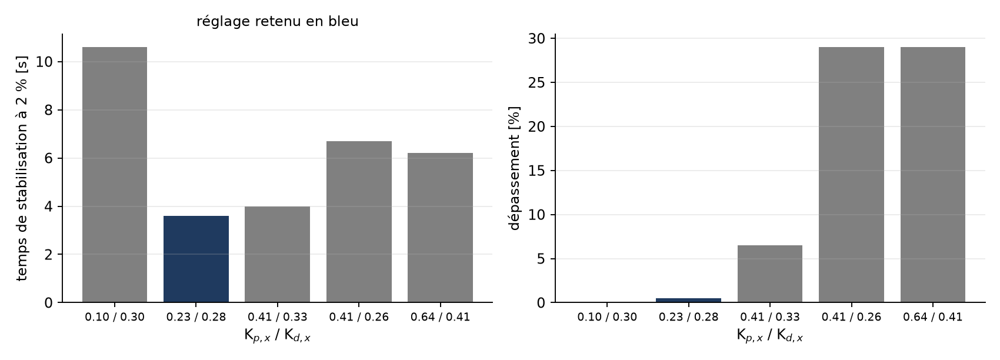
Le réglage retenu est trois fois plus rapide que le premier (3,6 s contre 10,6 s), sans dépassement notable et insensible au bruit : l'erreur finale est de 5 mm sans bruit et de 1,5 mm avec. Au-delà de ωn ≈ 2 rad/s, monter les gains ne sert plus : θref sature, l'accélération est plafonnée à environ 2 m/s², le second ordre linéaire ne décrit plus le système et le dépassement atteint 29 %.
Tous les contrôleurs LQ sont réunis dans mission_LQ.slx : LQI de z (Kp = 1,856 ; Kd = 0,882 ; Ki = 0,787) avec un terme de vol stationnaire 0,39/(cos θ·cos φ) saturé entre 0,35 et 0,41, LQI de ψ (0,252 ; 0,125 ; 0,097), LQI de θ et de φ (0,443 ; 0,130 ; 0,280), PD de x et de y (0,23 ; 0,28) qui donnent θref et φref saturés à ±0,2 rad (signe inversé pour φ, car +φ donne −y), et le mélangeur « + » :
L'objectif est de monter à 0,5 m, de faire un tour complet à vitesse constante (le scan), puis de se poser sur la voiture, qui a avancé entre-temps : mouvement rectiligne uniforme xv(t) = 1 + 0,3·t, hauteur hv = 0. Les fichiers originaux ne sont pas modifiés ; la nouvelle version est dans commande_LQ/mission_LQ/ (mission_LQ.slx), avec trois ajouts.
Ajout 1 : un séquenceur de mission. Un bloc MATLAB Function discret (Ts = 0,05 s), en machine à états, alimente les références x, y, z, ψ et une nouvelle vitesse de consigne vxref.
Ce profil part exactement de la position du drone avec une vitesse relative nulle, puis converge sans dépassement. L'accélération maximale demandée, d0/T² ≈ 0,6 m/s², reste bien sous la limite de θmax = 0,2 rad (environ 2 m/s²). Un échelon de 5,5 m aurait saturé θ et donné environ 30 % de dépassement, comme dans le balayage précédent.
Ajout 2 : anticipation de vitesse dans la boucle x. La loi devient θref = Kp(xref − x) + Kd(vxref − vx), au lieu de −Kd·vx. Le drone n'a presque pas de traînée : tenir une vitesse constante ne demande aucune inclinaison, et un PD qui freine sur vx ne peut être équilibré que par une erreur de position. Il reste une erreur de traînage Kd·v/Kp ≈ 1,2·v, soit 36 cm derrière la voiture à 0,3 m/s. Donner la vitesse de consigne annule cette erreur.
Ajout 3 : rotation par ψ des commandes x et y. Les PD calculent leur commande dans le repère monde, alors que θ et φ inclinent le drone dans son propre repère. Un bloc applique une rotation d'angle ψ avant les saturations : avec cx = θw et cy = −φw,
Sans cette rotation, la mission marchait parfaitement sans bruit mais dérivait fortement dès g_noise = 0,01 : 10 m en x et 16 m en y pendant le scan, jusqu'à 39 m à 0,1. À ψ ≈ π, un θ positif fait reculer le drone en x monde et la boucle x devient une rétroaction positive. Sans bruit l'erreur reste exactement nulle, donc l'instabilité ne se voit pas ; le moindre bruit la déclenche. Avec la rotation, la dérive pendant le scan reste sous 2 cm.
Un essai a été écarté : remplacer θ et φ par ∫ωy et ∫ωx (méthode de l'étape C1). C'est inutile ici et légèrement moins bon : à g_noise = 0,1, l'écart au posé passe à 3,6 cm au lieu de 1,3 cm, car l'intégrale du gyroscope dérive. La correction utile était la rotation, pas l'estimateur.
g_noise | Posé à | Écart en x drone − voiture | Écart en y | Vitesse relative | Dérive pendant le scan |
|---|---|---|---|---|---|
| 0 | 40,95 s | −0,9 cm | 0,0 cm | 0,003 m/s | 0 |
| 0,01 | 40,95 s | −1,0 cm | 0,0 cm | 0,002 m/s | < 2 mm |
| 0,1 | 40,60 s | −1,3 cm | −0,9 cm | 0,009 m/s | < 2,5 cm |
Un second essai à g_noise = 0,1 (autres graines de bruit) donne un posé à 41,25 s, avec −0,4 cm d'écart et 0,007 m/s de vitesse relative. Il n'y a aucun dépassement de la voiture pendant la poursuite, et l'alignement est atteint vers t ≈ 36 s. Les fichiers de résultats contiennent ce second jeu de graines : le posé y a lieu à 40,95 s, 40,95 s et 41,25 s, et les écarts en x relevés en fin de simulation sont de −0,06, −0,20 et −1,47 cm.
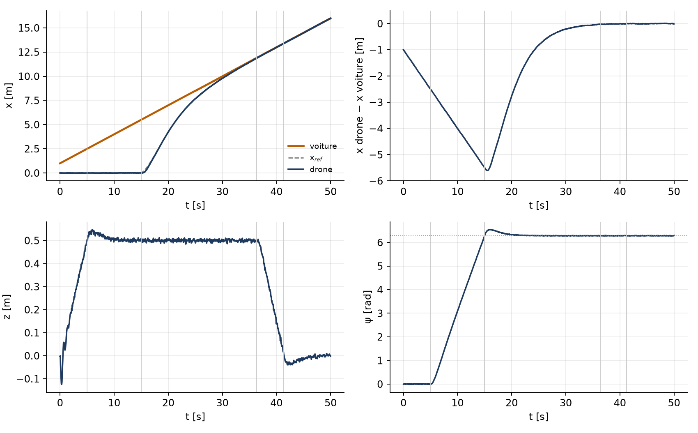
g_noise = 0,1. En haut : position du drone, de la voiture et référence, puis écart en x. En bas : altitude et angle de lacet. Les traits verticaux marquent les changements de phase (5, 15, 36 et 41 s environ).La cascade de la section 14 sert de référence : l'agent PPO remplace la boucle externe de x et fournit θref, le LQ d'attitude restant la boucle interne. Le projet a été réorganisé : les scripts Python sont dans python/ (identification, environnements, entraînement, évaluation, export), avec python/chemins.py pour centraliser les chemins (section 21). Nous avons par ailleurs corrigé le bloc de bruit de θ dans UAV_model.slx (covariance de 0,0001 comme les autres sorties) : θ se mesure donc directement et l'estimation par ∫ωy de la section 13.1 n'est plus nécessaire.
L'architecture est hiérarchique : l'agent donne θref = 0,2·a avec a ∈ [−1 ; 1], et un LQ d'attitude suit cette consigne. Le modèle est entièrement identifié à l'étape C1, sans réseau de neurones, car le mouvement en x est linéaire : ARX(2,6) du tangage, LQ d'attitude, ax = 9,907·θ + 0,0024·vx et intégration par trapèzes (x_env.py).
Validation de la boucle interne : en rejouant le vol Simulink de l'étape C1, l'écart sur θ est de 0,00012 rad (RMSE) et l'écart maximal sur x de 8 cm pour 4 m de course. À cette occasion, tant que θ était estimé par ∫ωy, le bruit faisait dériver l'intégrale d'environ 0,003 rad, soit 0,6 m de dérive en 10 s ; cette dérive est modélisée dans l'environnement comme option de robustesse.
Le LQ d'attitude de l'étape C1 (qang = 100, qw = 10, R = 2·104, montée de 0,85 s) ne convient pas comme boucle interne : avec lui, la cascade PD de x (0,23 ; 0,28) est instable, avec des oscillations croissantes de période d'environ 4 s. Sa bande passante (environ 2 rad/s) est voisine de celle de la boucle x (environ 1,5 rad/s).
Le LQ est recalculé sur le même modèle ARX avec qang = 100, qw = 1 et R = 200 : montée en 0,30 s avec 2,8 % de dépassement, et la cascade devient stable.
| Boucle interne | Échelon de θ : montée / dépassement | Cascade PD, saut de 2 m |
|---|---|---|
| LQ de C1 (R = 2·104) | 0,85 s / 0,4 % | instable (oscille à ±0,5 m) |
| LQ, R = 103 | 0,70 s / 0 % | 4,5 % de dépassement, réponse en 9,2 s |
| LQ, qw = 1, R = 200 (retenu) | 0,30 s / 2,8 % | 0 % de dépassement, réponse en 4,8 s |
| LQI de θ (0,443 ; 0,130 ; 0,280) | diverge | diverge |
Le LQI de θ ne fonctionne que dans son modèle Simulink à pas variable, où le contrôleur est en pratique continu. Échantillonné à 20 Hz, avec le retard moteur de 0,2 s, il devient instable : c'est le même phénomène que pour les gains de z de LQI.m.
Les scénarios d'évaluation sont fixes (eval_x.py) : un saut de 2 m, un saut de 5 m (4,6 m/s² demandés, donc θ sature), une cible à 0,3 m/s (la voiture), une cible à 1 m/s, et 20 missions aléatoires (graine 12345). Chacun est joué sans bruit et avec un bruit de mesure de 0,0045, équivalent à g_noise = 0,1.
| Contrôleur | Saut de 2 m | Saut de 5 m | Écart final, voiture à 0,3 m/s | 20 missions : rendement / RMSE |
|---|---|---|---|---|
| PD de la cascade LQI, sans anticipation (0,23 / 0,28) | 290 | 239 | 36,5 cm (traînage) | 296 / 0,181 m |
| PD + anticipation de vitesse (0,23 / 0,28) | 345 | 301 | 0,0 cm | 361 / 0,035 m |
| PD + anticipation optimisé (Kp = 0,3 ; Kd = 0,45) | 360 | 314 | 0,0 cm | 372,7 / 0,024 m |
Le dernier réglage vient d'une grille de 63 couples de gains. Il sert de référence dans la suite.
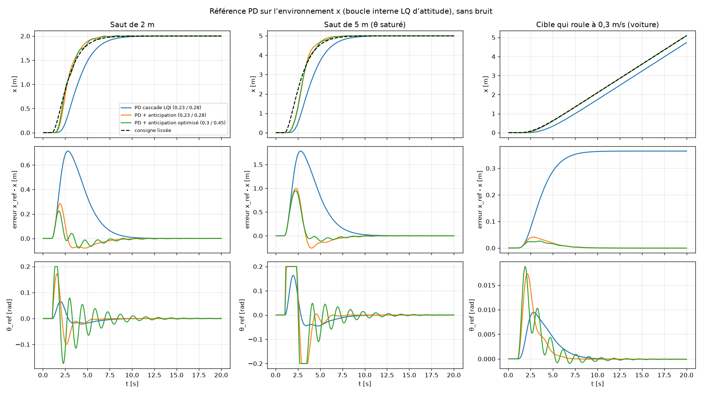
Entraînement PPO avec 16 environnements, nsteps = 512, des lots de 1024, un réseau 64×64, log_std_init = −1 et un bruit équivalent à g_noise = 0,1 : 2 millions de transitions en 6,7 minutes (environ 5 000 par seconde). Le meilleur agent est obtenu à 1,4 million de transitions ; le PD de référence est dépassé dès 600 000 (train_ppo_x.py).
| Contrôleur, bruit | Saut de 2 m | Saut de 5 m (saturé) | Voiture, écart final | 20 missions : rendement / RMSE / agitation |
|---|---|---|---|---|
| Agent, sans bruit | 375,6 / 0,1 % / 5,30 s | 303,5 / 0,1 % / 6,25 s | 0,6 cm | 384,6 / 0,018 m / 0,0072 |
| Agent, g ≈ 0,1 | 373,4 / 0,4 % / 5,30 s | 301,7 / 0,2 % / 6,25 s | 0,3 cm | 382,9 / 0,018 m / 0,0297 |
| PD, sans bruit | 359,6 / 0,4 % / 5,30 s | 314,3 / 0,2 % / 5,55 s | 0,0 cm | 372,7 / 0,024 m / 0,0128 |
| PD, g ≈ 0,1 | 356,8 / 0,6 % / 5,30 s | 312,4 / 0,2 % / 5,60 s | 0,5 cm | 371,7 / 0,024 m / 0,0228 |
L'agent bat le meilleur PD sur les consignes faisables : RMSE de 0,018 m contre 0,024 m (−25 %). Il fait moins bien sur le saut saturé de 5 m (303 contre 314), alors qu'on attendait l'inverse. La consigne d'entraînement est faisable par construction (sauts d'au plus 2 m avec τ = 1 s) : l'agent n'a presque jamais vu de saturation prolongée et n'a pas appris à accélérer au maximum puis à freiner. Il freine trop tard et dépasse la voiture de 0,60 m (voiture 5,5 m devant à 0,3 m/s, le cas de la mission LQ) et la cible de 1,97 m sur un saut de 8 m.
L'agent est réentraîné depuis zéro (train_ppo_x_saturation.py) sur des consignes tirées dans trois familles :
La récompense est celle de x_env tant que |e| < 2 m, puis prolongée de 2 à 10 m par une pente −0,2·(min(|e|, 10) − 2)/8. Sans ce prolongement, le terme de guidage lointain est plat au-delà de 2 m et l'agent ne sait plus s'il se rapproche. Le meilleur modèle maximise la somme des rendements moyens de 20 missions normales et de six scénarios de saturation fixes. L'entraînement dure 4 millions de transitions en 12,8 minutes, avec le même bruit ; le meilleur modèle est obtenu à 2,8 millions.
| Scénario | Nouvel agent | PD 0,3 / 0,45 | Premier agent |
|---|---|---|---|
| Saut de 5 m | 336,8 / 3,6 s / 0,04 m / 5 % | 314,3 / 5,4 s / 0,11 m / 10 % | 303,5 / 5,7 s / 0,45 m / 13 % |
| Saut de 8 m | 272,2 / 6,7 s / 0,26 m / 12 % | 245,1 / 8,3 s / 0,61 m / 18 % | 222,8 / 8,2 s / 1,97 m / 28 % |
| Aller-retour de 6 m | 242,7 / 11,0 s / – / 12 % | 185,7 / 13,1 s / – / 27 % | 144,3 / 13,7 s / – / 35 % |
| Voiture à 5,5 m, 0,3 m/s | 332,7 / 3,9 s / 0,02 m / 6 % | 313,0 / 3,7 s / 0,10 m / 12 % | 290,2 / 6,2 s / 0,60 m / 15 % |
| Voiture à 8 m, 0,8 m/s | 285,0 / 4,8 s / 0,04 m / 10 % | 260,6 / 7,0 s / 0,29 m / 18 % | 221,3 / 8,2 s / 1,79 m / 28 % |
| Voiture à 4 m, 0,5 m/s, qui freine | 331,9 / 3,6 s / 0,03 m / 4 % | 314,0 / 4,0 s / 0,06 m / 8 % | 330,9 / 3,8 s / 0,12 m / 8 % |
| Moyenne des six scénarios | 300,2 | 272,1 | 252,2 |
Pour l'aller-retour, l'indicateur de dépassement n'est pas donné : il est calculé dans le sens du premier saut et mesure en réalité le retard sur le trajet retour. Un vrai dépassement, mesuré transition par transition, est donné dans la section 16.
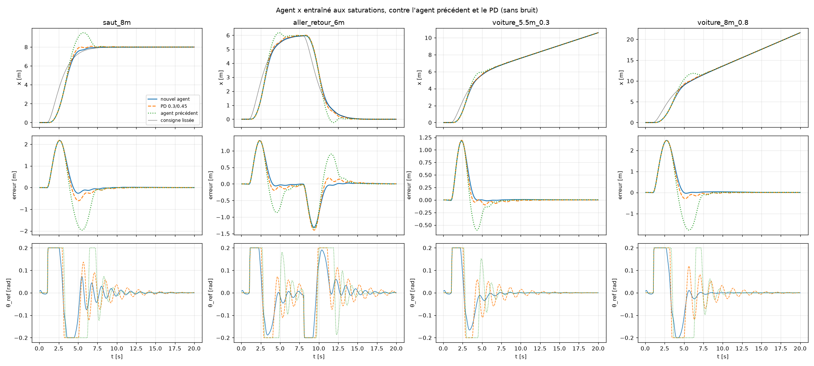
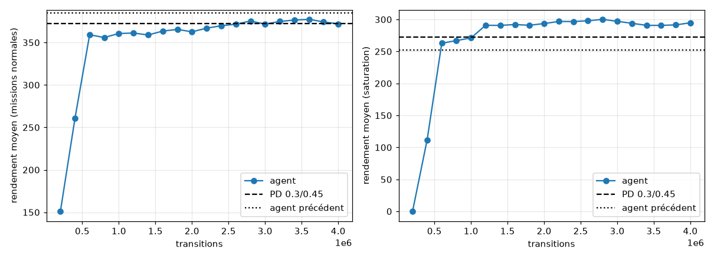
| Contrôleur, bruit | 20 missions | Saut de 2 m : rendement / dépassement | Saut de 5 m : rendement / réponse à 5 cm | Voiture 0,3 m/s : écart final |
|---|---|---|---|---|
| Nouvel agent, sans bruit | 375,4 / 0,0219 m / 0,0112 | 373,3 / 0,1 % | 336,8 / 6,40 s | 0,0 cm |
| Nouvel agent, g ≈ 0,1 | 373,8 / 0,0221 m / 0,0275 | 371,5 / 0,3 % | 334,9 / 6,45 s | 0,3 cm |
| PD, sans bruit | 372,7 / 0,0240 m / 0,0128 | 359,6 / 0,4 % | 314,3 / 5,55 s | 0,0 cm |
| PD, g ≈ 0,1 | 371,7 / 0,0245 m / 0,0228 | 356,8 / 0,6 % | 312,4 / 5,60 s | 0,5 cm |
| Premier agent, sans bruit | 384,6 / 0,0176 m / 0,0072 | 375,6 / 0,1 % | 303,5 / 6,25 s | 0,6 cm |
| Premier agent, g ≈ 0,1 | 382,9 / 0,0179 m / 0,0297 | 373,4 / 0,4 % | 301,7 / 6,25 s | 0,3 cm |
En saturation, le nouvel agent est le meilleur des trois : sur la voiture à 5,5 m il dépasse de 0,02 m contre 0,60 m pour le premier agent, et sur la voiture à 8 m roulant à 0,8 m/s de 0,04 m contre 1,79 m. Il dépasse 2 à 7 fois moins que le PD et rattrape plus vite (4,8 s contre 7,0 s sur la voiture à 0,8 m/s). Il a appris la stratégie attendue : accélérer au maximum, puis freiner par anticipation. En contrepartie, il perd un peu en précision fine (RMSE de 0,022 m contre 0,018 m sur les 20 missions, mais toujours meilleur que le PD à 0,024 m) et il est plus lent sur les cinq derniers centimètres : sur le saut de 5 m, 10 cm en 3,6 s contre 5,4 s pour le PD, mais 5 cm en 6,4 s contre 5,55 s. Le critère de sélection, la somme des deux rendements, évite de sacrifier l'un des deux objectifs. C'est cet agent qui est retenu pour la mission d'atterrissage.
Les échelons ne disent pas si les agents suivent des consignes riches, ni quelle est leur bande passante en boucle fermée. On utilise donc des séquences binaires pseudo-aléatoires (PRBS) de longueur maximale, produites par un registre à décalage. La période de bit Tb est de l'ordre du temps de montée en boucle fermée de chaque axe, et la consigne passe par le même lissage qu'à l'entraînement. Les indicateurs sont la RMSE et l'écart maximal sur la consigne lissée, le retard (maximum de l'intercorrélation), la bande à −3 dB (estimateur H1 = Pry/Prr par la méthode de Welch, nperseg = 256, en ne gardant que les points de cohérence supérieure à 0,8) et l'agitation de la commande (moyenne de |Δa|).
Premiers essais, d'environ une minute (essais_prbs.py) : z entre 0,3 et 0,7 m (Tb = 0,5 s, 63 bits, décollage compris), vitesse de lacet de ±0,6 rad/s (Tb = 0,5 s) et x entre 0 et 1,5 m (Tb = 1,5 s, 31 bits). Pour le lacet, on excite la variable sur laquelle l'agent a été entraîné.
| Axe | Contrôleur | RMSE | Écart max | Retard | Bande à −3 dB | Agitation |
|---|---|---|---|---|---|---|
| z | Agent PPO | 0,0268 m | 0,054 | 0,10 s | 2,42 Hz | 0,027 |
| LQI | 0,0797 m | 0,180 | 0,40 s | 1,25 Hz | 0,016 | |
| ψ | Agent PPO | 0,0326 rad | 0,070 | 0,00 s | 2,11 Hz (sur ω) | 0,047 |
| LQI de lacet | 0,1368 rad | 0,345 | 0,35 s | 0,47 Hz | 0,046 | |
| x | Agent PPO | 0,0605 m | 0,158 | 0,10 s | 1,33 Hz | 0,054 |
| PD 0,3 / 0,45 | 0,0729 m | 0,174 | 0,10 s | 1,17 Hz | 0,051 |
Avec un bruit équivalent à g_noise = 0,1, les RMSE sont quasiment identiques : les trois agents suivent bien des consignes riches sans dégradation due au bruit. Le diagramme de Bode du LQI de lacet montre en outre une forte résonance vers 1,5 Hz, signe d'une faible marge de stabilité.
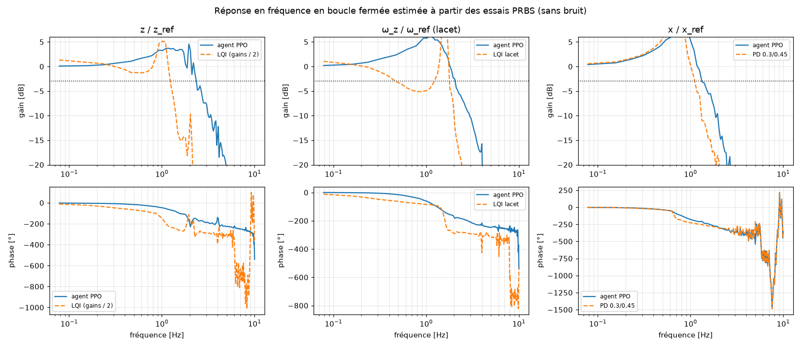
Les essais longs (essais_prbs_longs.py, 2 à 4 minutes de vol) reprennent la même idée avec des séquences de 7 bits, ou de 6 bits avec une période de bit plus longue. Ils apportent une réponse en fréquence plus fiable (plus de segments moyennés), une vérification de stabilité sur un vol long (RMSE du premier et du dernier quart) et un vrai essai de saturation. Quatre essais : z (0,3 ↔ 0,7 m, Tb = 0,5 s, 130 s), lacet (±0,6 rad/s, 129 s), x fin (0 ↔ 1,5 m, Tb = 1,5 s, 192 s, consignes faisables) et x grand (0 ↔ 6 m, Tb = 4 s, 254 s, θref sature à chaque transition). Pour x, quatre contrôleurs sont comparés, tous avec le LQ d'attitude rapide : l'agent réentraîné (retenu), le premier agent, le LQ + PD optimisé (0,3 / 0,45 avec anticipation) et le LQ + PD de la cascade LQI (0,23 / 0,28, sans anticipation).
| Essai | Contrôleur | RMSE | 1er / dernier quart | Écart max | Retard | Bande à −3 dB | Agitation (sans / avec bruit) |
|---|---|---|---|---|---|---|---|
| z | Agent PPO | 0,0267 m | 0,0245 / 0,0286 | 0,054 | 0,10 s | 2,34 Hz | 0,026 / 0,036 |
| LQI | 0,0795 m | 0,0798 / 0,0788 | 0,172 | 0,40 s | 1,25 Hz | 0,015 / 0,017 | |
| Lacet | Agent PPO | 0,0326 rad | 0,0318 / 0,0332 | 0,070 | 0,00 s | 2,11 Hz (sur ω) | 0,048 / 0,062 |
| LQI | 0,1354 rad | 0,1511 / 0,1182 | 0,360 | 0,30 s | 0,55 Hz | 0,047 / 0,111 | |
| x fin | Agent réentraîné | 0,0600 m | 0,0526 / 0,0646 | 0,168 | 0,15 s | 1,48 Hz | 0,052 / 0,057 |
| Premier agent | 0,0606 m | 0,0496 / 0,0681 | 0,160 | 0,10 s | 1,41 Hz | 0,053 / 0,061 | |
| LQ + PD optimisé | 0,0725 m | 0,0618 / 0,0798 | 0,175 | 0,15 s | 1,17 Hz | 0,050 / 0,052 | |
| LQ + PD (cascade LQI) | 0,2675 m | 0,2599 / 0,2669 | 0,535 | 1,05 s | 0,31 Hz | 0,010 / 0,014 | |
| x grand | Agent réentraîné | 0,5625 m | 0,381 / 0,663 | 1,555 | 0,45 s | non linéaire | 0,029 / 0,038 |
| Premier agent | 0,5796 m | 0,400 / 0,667 | 1,609 | 0,25 s | non linéaire | 0,038 / 0,047 | |
| LQ + PD optimisé | 0,6045 m | 0,402 / 0,721 | 1,759 | 0,45 s | non linéaire | 0,042 / 0,045 | |
| LQ + PD (cascade LQI) | 1,0753 m | 0,791 / 1,236 | 2,140 | 1,10 s | 0,31 Hz | 0,015 / 0,020 |
| Contrôleur | x grand (32 transitions) : moyen / max / nombre > 5 cm | x fin (64 transitions) : max |
|---|---|---|
| Agent réentraîné | 0,002 m / 0,016 m / 0 sur 32 | 0,007 m |
| Premier agent | 0,162 m / 0,386 m / 22 sur 32 | 0,001 m |
| LQ + PD optimisé | 0,007 m / 0,015 m / 0 sur 32 | 0,007 m |
| LQ + PD (cascade LQI) | 0 / 0 / 0 sur 32 (retard de 1,1 s, RMSE de 1,08 m) | 0 |
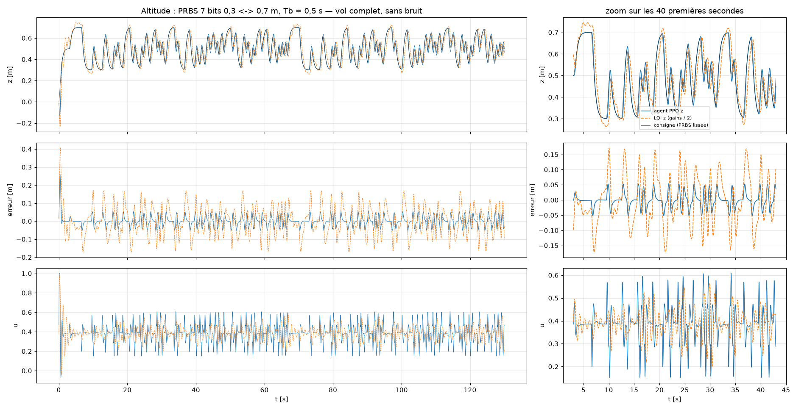
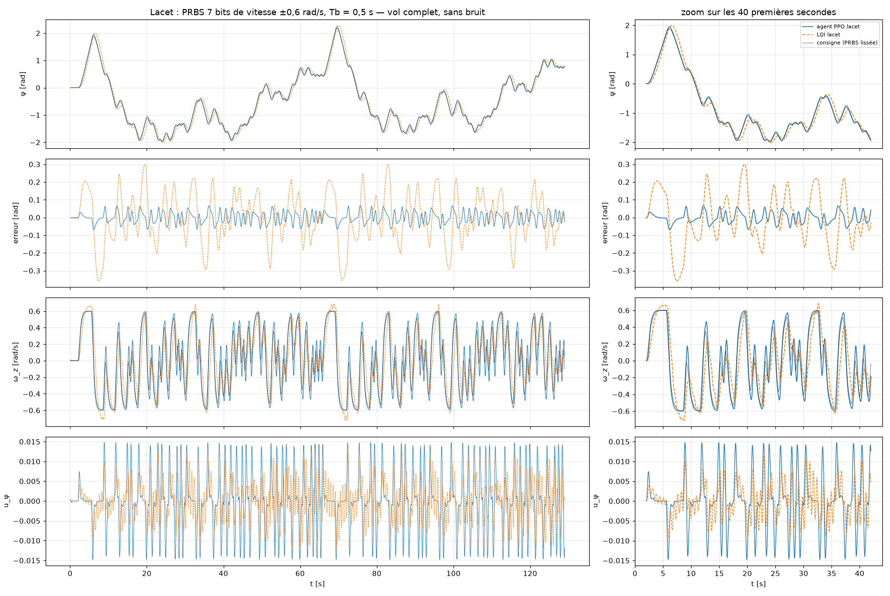
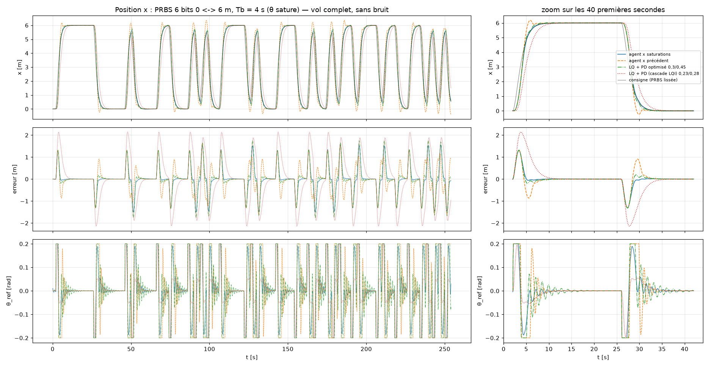
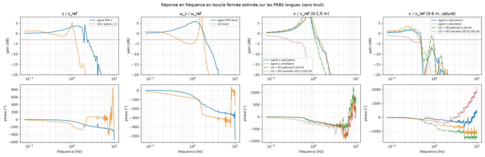
Pas de dérive : les écarts entre le premier et le dernier quart se retrouvent chez les contrôleurs classiques (LQI de lacet : 0,151 puis 0,118) ; ils viennent donc du contenu de la PRBS sur chaque quart, pas d'une dégradation des agents. Le bruit ne change pas la RMSE ; il n'augmente que l'agitation. z et lacet : les résultats courts sont confirmés. En z, la RMSE est 3 fois plus faible que celle du LQI, le retard 4 fois plus court et la bande 1,9 fois plus large ; en lacet, la RMSE est 4,2 fois plus faible et la bande 3,8 fois plus large. Le prix est une commande plus agitée (en z : 0,026 contre 0,015). x faisable : les deux agents battent la meilleure cascade LQ + PD (−17 % de RMSE, bande de 1,48 contre 1,17 Hz), et le réentraînement ne coûte pas de précision ici. x en saturation : l'agent réentraîné a la RMSE la plus faible et ne dépasse jamais la cible de plus de 2 cm, alors que le premier agent dépasse de plus de 5 cm sur 22 transitions sur 32 (jusqu'à 39 cm). Le PD optimisé dépasse peu aussi, mais il est plus lent aux basculements (écart maximal de 1,76 m contre 1,56 m). Le PD de la cascade LQI, sans anticipation, ne dépasse jamais mais est 4 fois moins précis (retard d'environ 1 s) : c'est l'intérêt de l'anticipation de vitesse. La bande passante n'a pas de sens pour x grand, le système étant non linéaire en saturation ; la RMSE de 0,56 m est inévitable, puisque la consigne lissée de 6 m en τ = 1 s n'est pas atteignable.
La chaîne d'export est la même que pour le lacet, dans le dossier simulink_RL/x/ (simulink_RL/zpsi/ reste inchangé). export_x.py écrit les trois politiques (policy_x.mat pour l'agent réentraîné, policy_z.mat et policy_psi.mat), le gain du LQ d'attitude rapide et un vol Python sans bruit de 800 pas. Le gain est K = [0,50262 ; 0,14812 ; 0,00886 ; 0,00354 ; 0,17685 ; 0,00301 ; 0,00267 ; 0,00274 ; 0,00228].
Le contrôleur rl_controller_x.m (appelé à chaque pas, Ts = 0,05 s) applique θref = 0,2·ax, puis le LQ d'attitude uθ = −K·[θ − θref, ωy, ω̇y(k), ω̇y(k−1), uθ(k−1 à k−5)] ; le même LQ tient φ à 0. Une anticipation de l'inclinaison est ajoutée sur z : uz + 0,39·(1/(cos θ·cos φ) − 1). Le mélangeur « + » de l'étape A est suivi d'une saturation à ±1, et les commandes de tangage et de roulis réellement appliquées sont mémorisées pour le LQ. construire_boucle_x.m crée EINT_RL_closed_loop_x.slx, et EINT_RL_eval_x.m lance la vérification puis les vols.
Vérification. Sur les 800 pas du vol Python rejoués dans controleur_x.m, la consigne, les sept composantes d'observation, l'action de l'agent x et la commande uθ sont identiques à Python (tolérances de 10−9 sur la consigne, 10−5 sur l'observation, 10−4 sur l'action et 10−6 sur uθ).
Mission de 40 s. Décollage à 0,5 m à t = 1 s, cap tenu à ψ = 0 ; saut de +2 m en x à 4 s, retour à 0 à 12 s ; à 20 s, la « voiture » apparaît 5,5 m devant et roule à 0,3 m/s, le cas de la mission LQ de la section 14.
g_noise | RMSE x (consigne lissée) | Écart max à la prédiction Python | Écart max à la voiture après rattrapage (t ≥ 30 s) | Dépassement de la voiture | RMSE z (t > 3 s) | |ψ| max | |y| max |
|---|---|---|---|---|---|---|---|
| 0 | 0,209 m | 0,134 m | 0,011 m | 0,003 m | 0,001 m | 0,003 rad | 0,015 m |
| 0,1 | 0,208 m | 0,137 m | 0,024 m | 0,014 m | 0,005 m | 0,017 rad | 1,08 m |
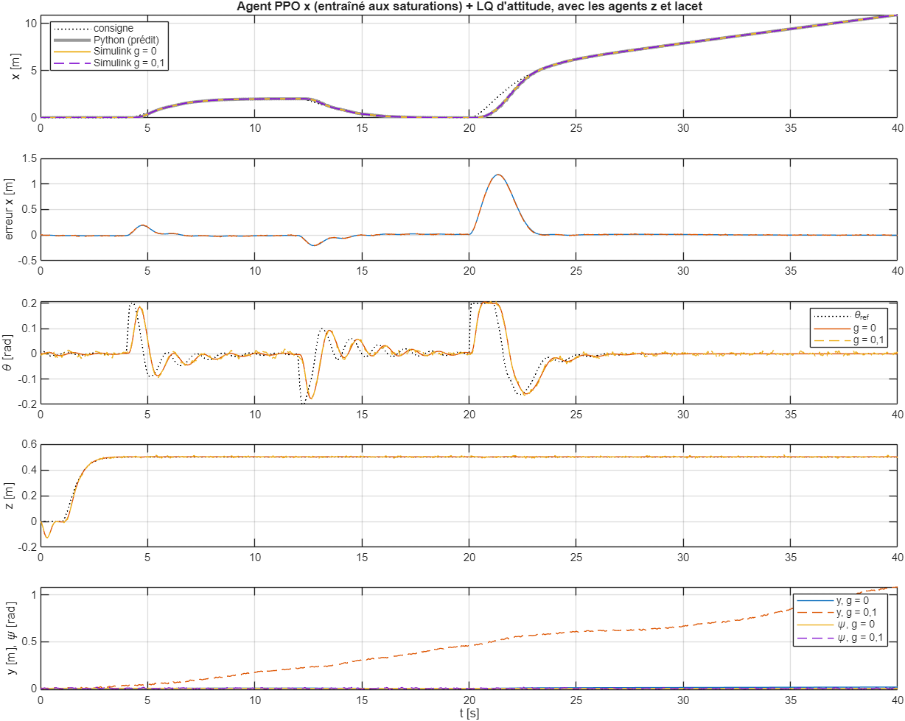
g_noise = 0,1), erreur, θ contre θref, altitude, puis y et ψ.Simulink reproduit la prédiction Python : à t = 6, 10, 18, 35 et 40 s, l'écart est d'au plus 2 mm. L'écart maximal (environ 13 cm) apparaît vers 22 s, en plein rattrapage saturé (θref = ±0,2) : il vient des petites différences entre l'ARX et le simulateur aux grandes inclinaisons, puis se résorbe. La RMSE de 0,21 m en x est dominée par ce rattrapage, la consigne lissée de 5,5 m en τ = 1 s n'étant pas atteignable. Le rattrapage de la voiture marche comme en Python : pas de dépassement notable (3 mm sans bruit, 1,4 cm avec), puis un suivi à 1 à 2 cm de la voiture qui roule. L'altitude reste à 0,5 m pendant les manœuvres (RMSE de 1 à 5 mm) : l'agent z, aidé par l'anticipation en 1/cos, compense la perte de poussée verticale à θ = 0,2 rad (environ 2 %), et ψ reste sous 1,1°.
Dans ce vol, φ est tenu à 0 par le LQ et y dérive librement avec le bruit (environ 1 à 1,7 m en 40 s). L'étape C3 (section 18) la résout : le même agent, par symétrie, asservit y, avec les erreurs projetées dans le repère du drone par ψ.
Aucun nouvel entraînement ni aucune nouvelle identification n'a été nécessaire. L'identification de l'étape C1 (section 13) montre que les deux axes du drone sont identiques : l'ARX de φ a le même gain que celui de θ (171,76 contre 171,78 rad/s² par unité, couplage inférieur à 2 %), et les accélérations valent ax = +9,91·θ et ay = −9,91·φ. En posant θ' = −φ, l'axe latéral devient un axe x identique à l'axe avant. L'agent x retenu (agent_x_ppo_saturation) et le même LQ d'attitude rapide pilotent donc les deux axes du drone :
Les consignes et les mesures de x, y, vx, vy sont exprimées dans le repère du sol, alors que θ et φ inclinent le drone selon ses propres axes. On projette donc l'erreur, la vitesse et la vitesse de consigne dans le repère du drone :
C'est la convention du bloc rotation_psi de la mission LQ. Les intégrales sont tenues dans le repère du drone. Le cap reste à 0 pendant les déplacements : le drone va en diagonale, sans s'orienter vers la cible, et le signe est absorbé par le facteur −0,2.
Décollage à 0,5 m à t = 1 s, scan de 360° entre 5 et 13 s en tenant la position (0, 0), déplacement en diagonale vers (2 ; 1,5) à 16 s, puis une « voiture » apparaît à 24 s en (5,5 ; 0), soit 3,5 m devant et 1,5 m sur le côté, et roule selon x à 0,3 m/s. La vérification pas à pas est OK : le contrôleur MATLAB et le LQ redonnent les valeurs de Python sur 900 pas (observations, actions et commandes uθ, uφ des deux axes).
| Vol | RMSE position | Dérive pendant le scan | Dépassement diagonale | Dépassement de la voiture | Écart voiture (t ≥ 35 s) | RMSE z | Erreur ψ max |
|---|---|---|---|---|---|---|---|
| Agent, g = 0 | 0,087 m | 1,0 cm | 0,1 cm | 0,6 cm | 0,3 cm | 1 mm | 0,046 rad |
| Agent, g = 0,1 | 0,087 m | 1,7 cm | 1,3 cm | 1,3 cm | 1,6 cm | 5 mm | 0,053 rad |
| PD, g = 0 | 0,087 m | 0,0 cm | 0,8 cm | 7,0 cm | 0,3 cm | 1 mm | 0,046 rad |
| PD, g = 0,1 | 0,087 m | 1,5 cm | 1,5 cm | 7,0 cm | 2,0 cm | 5 mm | 0,053 rad |
L'écart entre Simulink et le vol Python prédit est de 1,5 cm à g = 0 et de 2,0 cm à g = 0,1. La RMSE est dominée par le retard inévitable sur les sauts de consigne, identique pour tous les contrôleurs. Le critère qui sépare les contrôleurs est le dépassement de la voiture : l'agent ne passe pas devant elle (au plus 1,3 cm), alors que le PD la dépasse de 7 cm.
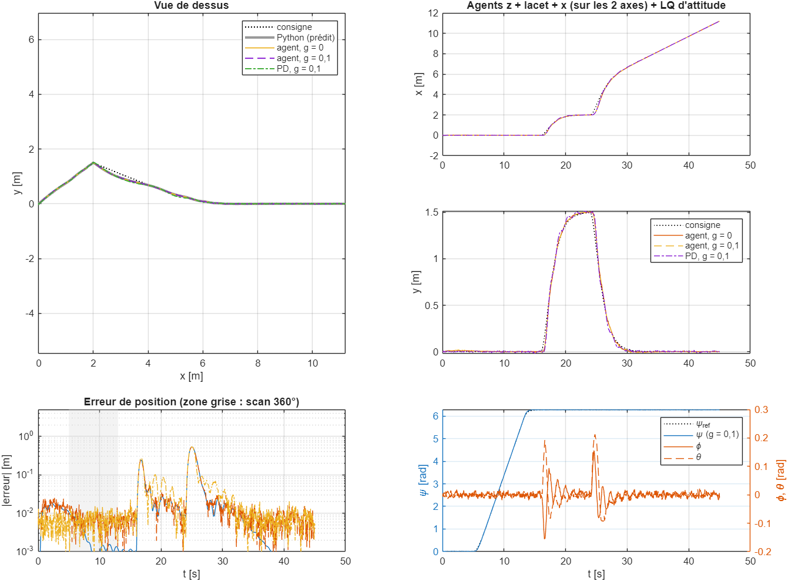
On tient le cap à 90° avec g = 0,1. Avec la rotation, la RMSE est de 0,090 m et le dépassement de la voiture de 1,3 cm, comme à ψ = 0. Sans la rotation, la boucle diverge (900 m d'erreur à 45 s) : à ψ = 90°, une inclinaison θ fait avancer le drone selon y au lieu de x, et la boucle x pousse sur le mauvais axe.
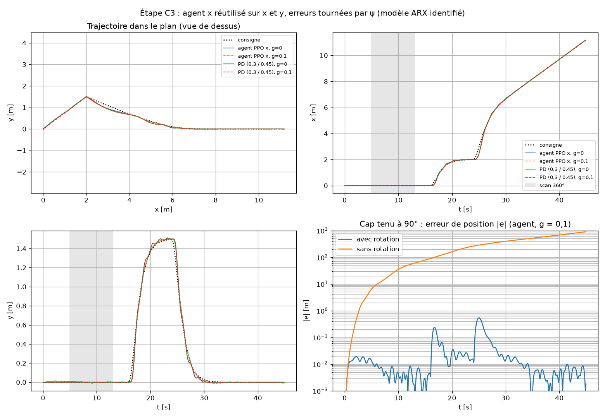
Essais de 190 s à g = 0,1 sur le modèle ARX. L'essai A pilote y seul (PRBS de 7 bits entre 0 et 1,5 m, Tb = 1,5 s) ; l'essai B pilote x et y ensemble pendant que le drone tourne en continu à 0,2 rad/s (6 tours en 190 s), de sorte que les consignes passent sans cesse d'un axe du drone à l'autre.
| Essai | Contrôleur | RMSE | Bande passante −3 dB | Dépassements > 5 cm |
|---|---|---|---|---|
| A. y seul, ψ = 0 | Agent | 0,060 m | 1,48 Hz | 0/64 |
| PD 0,3/0,45 | 0,072 m | 1,17 Hz | 0/64 | |
| B. x et y, cap tournant | Agent (y / x) | 0,061 / 0,060 m | 1,56 / 1,25 Hz | 0/64, 0/46 |
| PD (y / x) | 0,074 / 0,075 m | 1,17 / 1,17 Hz | 1/64, 0/46 |
L'essai A reproduit exactement l'essai « x fin » de la section 16 (agent à 0,060 m et 1,48 Hz) : l'axe y miroir se comporte comme l'axe x. Dans l'essai B, les performances ne changent pas malgré la rotation, et l'erreur ne dérive pas sur 190 s.
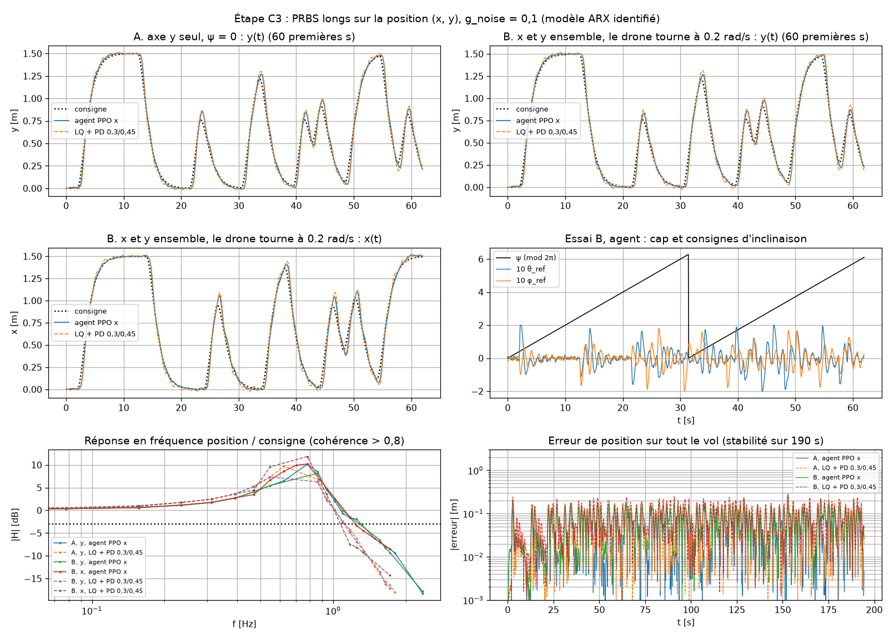
Le modèle test_LQI_y.slx (ancien indentification_phi.slx) a une cascade y → φ correcte : le signe (+φ fait aller vers −y) et le mélangeur (+u2 / −u4) sont justes. En revanche, sa boucle interne φ reprend les gains du LQI double intégrateur de gains_LQI.m (Kp 0,443, Kd 0,130, Ki 0,280) : elle ne fonctionne qu'en solveur continu, et échantillonnée à 20 Hz sur l'ARX identifié (retard moteur) elle diverge avec ces gains d'origine, avec une oscillation saturée jusqu'à 3,8 rad pour un échelon de 0,1 rad. Avec les gains réajustés pour 20 Hz (section 20.1), le LQI de θ est stable. Le contrôleur RL utilise le LQ synthétisé sur l'ARX (étape C1), plus rapide et mieux amorti.
La mission réunit tout ce qui précède : le drone se stabilise à z = 0, monte à 0,5 m, fait un tour complet sur lui-même en 10 s (le scan), rattrape une voiture qui a démarré pendant le scan, la suit à altitude constante, puis descend lentement et se pose dessus. Aucun réentraînement n'a été fait : on réutilise l'agent z (agent_z_ppo), l'agent de lacet (agent_psi_ppo), l'agent x sur les deux axes avec rotation par ψ, et le LQ d'attitude. Trois éléments sont ajoutés : un superviseur, un générateur de trajectoire de voiture et une consigne d'approche.
Modèle cinématique unicycle : x' = v cos(cap), y' = v sin(cap), cap' = v·κ. La vitesse v(s) et la courbure κ(s) sont des paliers raccordés par des transitions en S, de sorte que l'accélération et la variation de braquage sont bornées. Le scénario nominal : garée en (1,5 ; 0,5), la voiture démarre à 4 s, accélère à 0,5 m/s, ralentit à 0,35 m/s pour un virage à gauche de rayon 3 m, réaccélère à 0,6 m/s, prend une courbe à droite de rayon 6 m, puis freine à 0,3 m/s (accélération longitudinale ≤ 0,25 m/s², latérale ≤ 0,06 m/s²). La trajectoire est intégrée une fois au pas de 0,05 s et enregistrée en table (voiture.mat) : Python et Simulink voient exactement la même voiture. Une fois le scan fini, le drone est supposé connaître la position et la vitesse de la voiture (détection pendant le scan, puis suivi).
| Phase | Consignes | Passage à la suivante |
|---|---|---|
| 0 Stabilisation | zref = 0, ψref = 0, position (0, 0) | 2 s |
| 1 Montée | saut lissé de zref vers 0,5 m (τ = 0,35 s, comme à l'entraînement) | |z − 0,5| < 2 cm et |vz| < 5 cm/s pendant 1 s |
| 2 Scan | ψref : un tour à 2π/10 = 0,63 rad/s, départ et arrêt lissés | 10 s écoulées, |ψ − 2π| < 0,05 rad et |ωz| < 0,1 rad/s |
| 3 Poursuite | pref = pv + Δ0(1 + s/τ)e−s/τ, τ = 1 s ; cap : voir 19.5 | écart < 5 cm et écart de vitesse < 10 cm/s pendant 2 s d'affilée (et cap aligné à 3°) |
| 4 Descente | zref descend à 0,1 m/s ; pause si l'écart horizontal dépasse 10 cm, la poursuite continuant | z − hv < 2 cm |
| 5 Posé | zref = hv (= 0), suivi de la voiture maintenu | — |
Trois choix de conception. D'abord, la consigne d'approche démarre sur le drone (pas de saut) et rejoint la voiture comme un 2e ordre critique de τ = 1 s : c'est exactement le lissage des sauts vus par l'agent x à l'entraînement, et comme la vitesse de consigne contient celle de la voiture, les virages et les freinages sont anticipés. Ensuite, le superviseur est déterministe à partir des mesures, ce qui permet la vérification MATLAB = Python pas à pas. Enfin, UAV_model n'a pas de sol : « posé » signifie arrivé à la hauteur de la plateforme, aligné, à vitesse relative quasi nulle ; pour la même raison, le drone part moteurs coupés et descend d'environ 13 cm pendant la première seconde, avant que l'agent z ne le ramène à 0.
La vérification est OK (1200 pas, écart < 10−6) et l'écart de position entre Simulink et Python est de 7 mm au maximum sur toute la mission. Les vols Simulink de la première version, cap tenu à 0, donnent :
| Vol | Début poursuite | Début descente | Posé | Écart au contact | Vitesse relative | Écart max en descente |
|---|---|---|---|---|---|---|
| Agents, g = 0 | 15,75 s | 25,30 s | 30,20 s | 0,8 cm | 0,4 cm/s | 3,8 cm |
| Agents, g = 0,1 | 15,75 s | 26,25 s | 31,15 s | 0,5 cm | 1,3 cm/s | 4,5 cm |
| PD x/y, g = 0 | 15,75 s | 24,20 s | 29,10 s | 0,7 cm | 1,2 cm/s | 2,6 cm |
| PD x/y, g = 0,1 | 15,75 s | 24,70 s | 29,55 s | 1,0 cm | 1,3 cm/s | 3,2 cm |
Dans les vols « PD », z et le lacet restent pilotés par les agents ; seule la position x/y passe à la cascade LQ + PD 0,3/0,45 avec anticipation. Le rattrapage fait passer l'écart de 6,8 m à moins de 10 cm en environ 5 s (θ sature à ±0,2 rad), sans dépasser la voiture. Sur 12 voitures aléatoires (départ, cap, vitesses de 0,25 à 0,7 m/s, deux virages de rayon ≥ 2,5 m, g = 0,1), les deux contrôleurs se posent 12 fois sur 12, avec au plus 4,5 cm d'écart au contact pour les agents et 3,3 cm pour le PD. Le PD semblait donc meilleur, ou équivalent. Cette lecture a été corrigée ensuite.
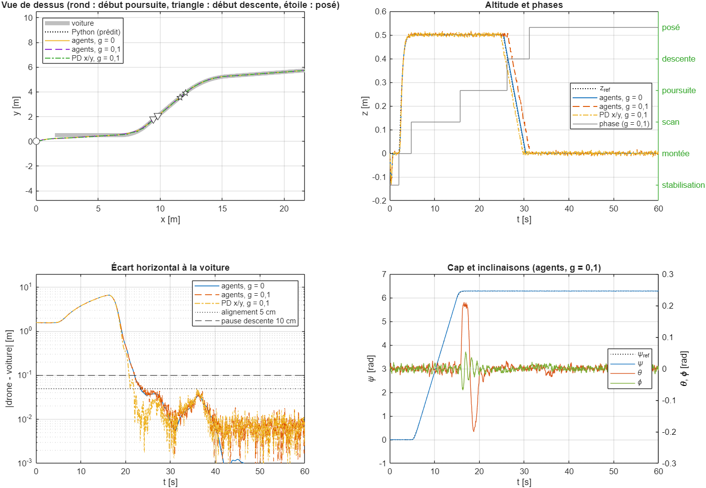
La consigne d'approche (Δ0 = 6,8 m, τ = 1 s) n'arrive elle-même à 5 cm de la voiture qu'environ 7 s après le début de la poursuite (27 cm à 5 s, 12 cm à 6 s, 5 cm à 7 s). Le PD dépasse sa propre consigne de 12 cm en sortie de saturation (20–22 s) ; comme la consigne est encore derrière la voiture, ce dépassement le rapproche d'elle et lui fait passer le critère d'alignement plus tôt : le critère récompensait un défaut. L'agent suit sa consigne à 1–3 cm près, sans la dépasser. Un test isolé sur l'axe x (rattrapage saturé de 6,8 m d'une cible à 0,35 m/s) le confirme :
| Dépassement | Aligné (5 cm pendant 2 s) | θ saturé | |
|---|---|---|---|
| Agent | 4,5 cm | 3,4 s | 1,4 s |
| PD | 21 cm | 6,8 s | 2,6 s |
Sur une cible qui accélère durablement (0,0625 m/s²), l'agent et le PD ont le même retard, 1,8 et 1,9 cm (la théorie pour le PD donne a/(9,91·Kp) = 2,1 cm) : l'accélération de la voiture n'est dans l'observation d'aucun des deux.
Choix de τ. On a comparé trois valeurs de τ pour la consigne d'approche, à g = 0,1, sur la voiture nominale et 12 voitures aléatoires (biais brut, cap fixe).
| τ | Contrôleur | Poursuite moyenne | Écart max après rattrapage | Écart au contact max |
|---|---|---|---|---|
| 1 s | agent | 8,7 s | 20 cm | 3,7 cm |
| 1 s | PD | 8,3 s | 20 cm | 4,3 cm |
| 0,5 s | agent | 8,0 s | 30 cm | 3,0 cm |
| 0,5 s | PD | 9,9 s | 66 cm | 3,8 cm |
| 0,25 s | agent | 9,0 s | 20 cm | 3,5 cm |
| 0,25 s | PD | 9,2 s | 22 cm | 4,6 cm |
Un τ plus court ne rend pas l'approche plus rapide : le drone est déjà à sa limite avec τ = 1 s (θ sature à 0,2 rad, soit environ 2 m/s²), et un τ court exige une vitesse de consigne infaisable, Δ0/(e·τ) = 2,5 m/s pour τ = 1 s, 5 m/s pour 0,5 s et 10 m/s pour 0,25 s, qui crée du dépassement. À τ = 0,5 s, l'agent encaisse cette consigne infaisable bien mieux que le PD (30 cm contre 66 cm), comme à l'étape C2. On garde τ = 1 s.
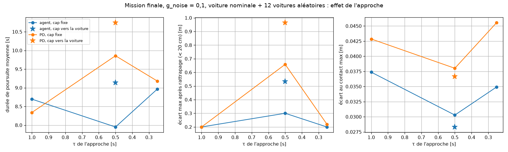
Correction du biais de l'agent x. La sortie de l'agent à l'équilibre vaut a(0) = 0,035, soit 7 mrad de θref : sur une cible fixe, cela laisse −1 cm à 1 s et −0,76 cm à 5 s, et l'intégrale conditionnelle met environ 20 s à l'effacer. On retranche donc a(0) à la sortie (a ← a − a(0)), sans réentraînement. Sur 13 voitures avec cap fixe, la poursuite dure en moyenne 8,4 s au lieu de 8,7 s (maximum 9,6 s au lieu de 12,6 s), le dépassement restant sous 3,7 cm. Le biais s'accompagne d'une linéarisation en 0 plus raide que celle du PD : 0,41 rad/m sur l'erreur de position contre 0,30, et 0,59 contre 0,45 sur l'erreur de vitesse.
Cap orienté vers la voiture. Pendant la poursuite, avec d la distance drone–voiture et β = sat((d − 1 m)/(2 m − 1 m), 0, 1), le cap visé est ψvisé = capv + β·wrap(gisement − capv). Au-delà de 2 m (β = 1), le drone vise la voiture ; en deçà de 1 m (β = 0), il prend le cap de la voiture ; entre les deux, la transition est douce, ce qui évite le gisement, mal défini au-dessus de la voiture. La vitesse de cap est ωref = sat(1,0·wrap(ψvisé − ψref) + (1 − β)·vv·κv, ±0,5 rad/s) : le terme vv·κv anticipe la rotation de la voiture dans les virages, et ωref reste dans la plage d'entraînement de l'agent de lacet (±1,5 rad/s). La descente exige en plus |ψ − capv| < 0,05 rad (3°). La rotation par ψ de l'étape C3 répartit automatiquement l'effort entre θ et φ, quel que soit le cap. Sur la voiture nominale, le cap passe de 0° à +50° dans le virage à gauche, puis revient vers +4°.
Avec τ = 1 s, le cap vers la voiture et le biais corrigé, la vérification MATLAB = Python est OK sur 1200 pas et l'écart de position entre Simulink et Python est de 7 mm au maximum.
| Vol | Poursuite | Posé | Écart au contact | Vitesse relative | vz au contact | Écart de cap au contact | Écart max en descente |
|---|---|---|---|---|---|---|---|
| Agents, g = 0 | 9,30 s | 29,95 s | 0,6 cm | 0,4 cm/s | −0,100 m/s | +0,03° | 3,1 cm |
| Agents, g = 0,1 | 9,35 s | 30,10 s | 0,8 cm | 1,3 cm/s | −0,106 m/s | −0,20° | 3,9 cm |
| PD x/y, g = 0 | 8,45 s | 29,10 s | 0,7 cm | 1,3 cm/s | −0,100 m/s | +0,03° | 2,7 cm |
| PD x/y, g = 0,1 | 9,65 s | 30,40 s | 0,4 cm | 2,4 cm/s | −0,103 m/s | −0,28° | 3,6 cm |
L'écart de cap au posé passe de −40° (première version) à moins de 0,3°. La robustesse est mesurée en simulation Python sur 13 voitures (g = 0,1, configuration finale), une fois le biais corrigé et le critère rendu équitable :
| Agent | PD | |
|---|---|---|
| Posé | 13/13 | 13/13 |
| Poursuite moyenne (max) | 9,2 s (11,0) | 9,8 s (10,8) |
| Dépassement de la voiture max | 4,3 cm | 5,0 cm |
| Écart au contact max | 3,7 cm | 4,7 cm |
| Vitesse relative max | 3,1 cm/s | 4,6 cm/s |
L'agent est meilleur que le PD sur tous les indicateurs de la robustesse. Le simulateur Python, assemblé uniquement à partir des modèles identifiés (GRU de z, GRU du lacet, ARX θ/φ avec LQ, translation dans le repère du sol tournée par le ψ réel), prédit le vol Simulink à 7 mm près. Les agents z et lacet servent dans tous les vols : altitude tenue à 3–17 mm, descente à −0,10 m/s exactement, scan sans dérive.
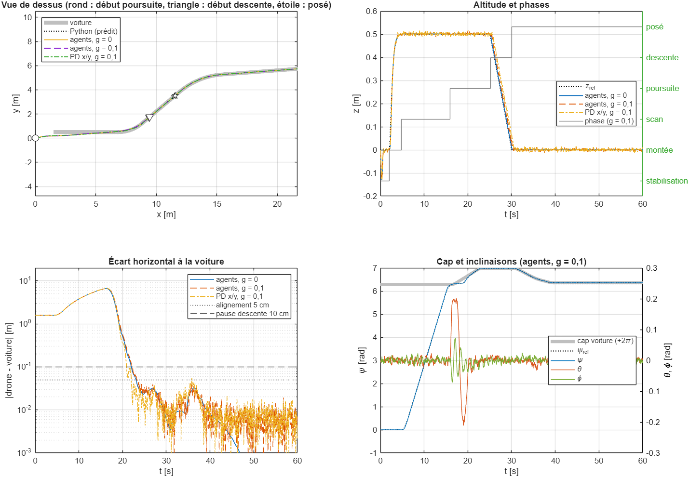
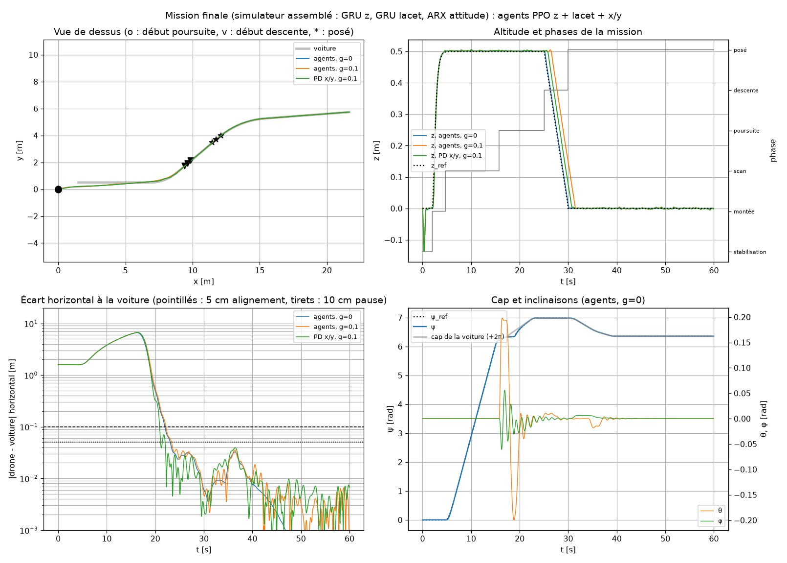
L'animation est tirée du vol Simulink (agents, g = 0,1), en temps réel à 10 images par seconde, de la fin du scan jusqu'à 2 s après le posé (17 s). Elle montre une vue de dessus centrée entre le drone et la voiture (zoom qui suit leur distance, drone à quatre rotors dont la couleur donne la phase : poursuite en bleu, descente en orange, posé en vert), une vue d'ensemble de la trajectoire, et l'altitude avec l'écart horizontal. Dans le HTML, elle est animée ; dans le PDF, trois vignettes la remplacent (début de poursuite, descente, posé). Fichier : python/resultats/mission/animation_mission.gif, copie dans rapport/animation_mission.gif.
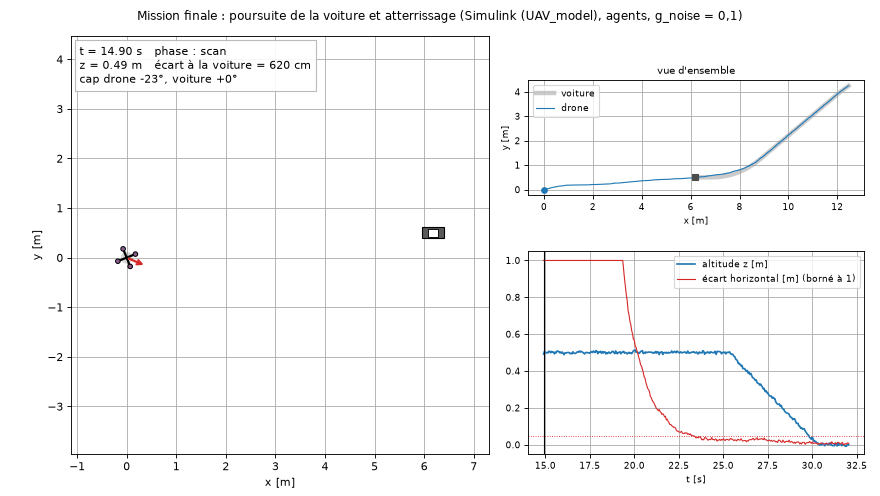
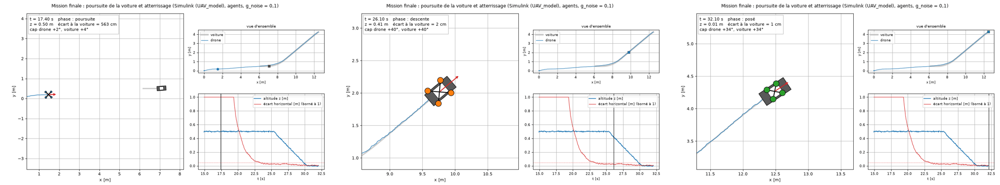
python/resultats/mission/animation_mission.gif.UAV_model n'a pas de sol, et la position de la voiture est supposée connue après le scan (pas de vision). « Posé » veut dire : arrivé à la hauteur de la plateforme, aligné, à vitesse relative quasi nulle.
Cette section répond à la question centrale du projet : que gagne-t-on à apprendre un agent plutôt qu'à calculer un régulateur ? Elle compare, axe par axe puis sur la mission, trois familles de contrôleurs :
python/identification/lq_arx.py pour z et le lacet) ;Tous sont évalués sur le même drone simulé (les modèles identifiés : GRU de z et du lacet, ARX de l'attitude), à 20 Hz, avec un bruit de mesure équivalent à g = 0,1 pour les indicateurs « bruit ». Le script est python/evaluation/comparaisons_LQI_ARX_RL.py, et les résultats sont dans python/resultats/comparaisons/. Un seul indicateur, la mission LQ, vient de Simulink (le modèle mission_LQ.slx , en continu).
Les gains de gains_LQI.m sont réglés et validés sur les modèles Simulink du LQI, où le LQI est continu (solveur à pas variable, sans bloqueur d'ordre zéro). Échantillonnés à Ts = 0,05 s, comme dans l'interface RL et dans toutes les comparaisons, ils subissent un retard d'environ un demi-pas, qui s'ajoute à celui des moteurs : z oscille et θ diverge. Ce n'est pas le réglage qui est en cause, c'est son implantation à 20 Hz. Comparer l'agent à ces gains bruts aurait faussé la comparaison, et leurs courbes écrasaient l'échelle des graphes ; elles ont été retirées.
Méthode : commande_LQ/reponses_LQI_simulink.m enregistre, sans bruit, les réponses Simulink des LQI d'origine (test_LQI_z, test_LQI_psi, test_LQI_x) ; python/identification/reajuster_gains_LQI.py garde exactement la même loi de commande et recale (Kp, Kd, Ki) par moindres carrés (Nelder-Mead), pour que la réponse à 20 Hz sur les modèles identifiés reproduise la réponse Simulink. Pour le lacet, la rampe d'origine du modèle (18 rad/s pendant 10 s) est remplacée, en mémoire seulement, par le scan (un tour en 8 s) ; le fichier .slx n'est pas modifié. Les gains sont dans python/modeles/gains_LQI_20Hz.json.
| Axe | Gains d'origine (Kp / Kd / Ki) | Gains réajustés (Kp / Kd / Ki) | Écart RMS à Simulink (origine → réajusté) |
|---|---|---|---|
| z | 1,856 / 0,882 / 0,787 | 1,195 / 0,765 / 0,695 | 5,2 → 2,6 cm |
| ψ | 0,252 / 0,125 / 0,097 | 0,226 / 0,115 / 0,090 | 0,004 → 0,001 rad (déjà quasi identique) |
| θ | 0,443 / 0,130 / 0,280 | 0,189 / 0,078 / 0,078 | 1,06 rad (diverge) → 0,021 rad |
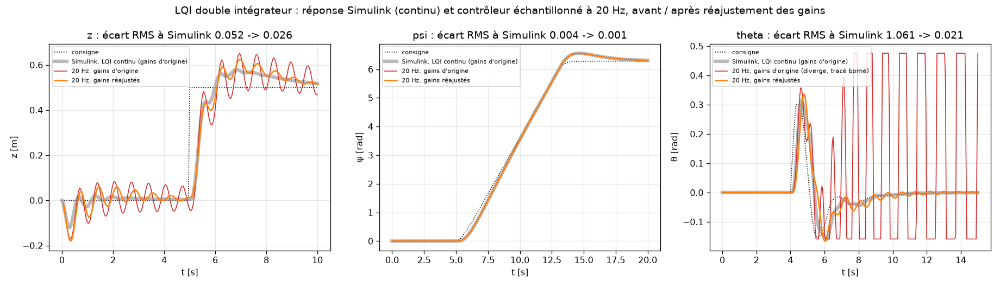
Le dépassement de 15° du LQI de lacet en fin de scan existe aussi sur Simulink : il tient au réglage (l'intégrale se charge pendant la rampe), pas à l'échantillonnage. Dans la suite, « LQI double intégrateur » désigne ce LQI à gains réajustés.
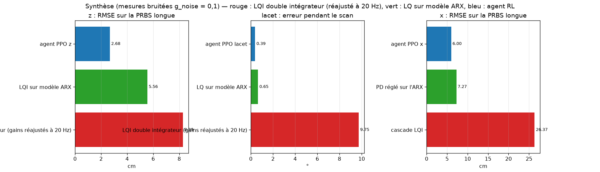
| Contrôleur | Montée | Dépassement | RMSE Fig. 1 (bruit) | RMSE PRBS (bruit) | Bande passante |
|---|---|---|---|---|---|
| LQI double intégrateur (gains réajustés à 20 Hz) | 0,85 s | 24,9 % | 11,7 cm | 8,3 cm | 0,47 Hz |
| LQ sur modèle ARX | 0,65 s | 10,0 % | 5,9 cm | 5,6 cm | 1,25 Hz |
| Agent PPO z | 0,85 s | 0,2 % | 3,1 cm | 2,7 cm | 2,34 Hz |
L'agent divise l'erreur sur la PRBS par 3,1 par rapport au LQI double intégrateur et par 2 par rapport au LQ sur ARX, et il ne dépasse presque pas (0,2 % contre 25 % et 10 %). Le LQ sur ARX est monté un peu plus vite que l'agent (0,65 s contre 0,85 s), au prix de 10 % de dépassement. L'ARX de z reste moins fidèle que le GRU (RMSE en simulation libre de 0,82 m/s², la poussée étant non linéaire), ce qui explique ces 10 % et justifie le choix d'un GRU pour z.
| Contrôleur | Erreur pendant le scan (bruit) | Dépassement en fin de tour | RMSE PRBS (bruit) | Bande passante (vitesse) |
|---|---|---|---|---|
| LQI double intégrateur (gains réajustés à 20 Hz) | 9,75° | 15,0° | 8,0° | 0,55 Hz |
| LQ sur modèle ARX | 0,65° | 0,0° | 2,5° | > 1,64 Hz |
| Agent PPO lacet | 0,39° | 0,1° | 1,9° | > 1,64 Hz |
Sur le lacet, les gains d'origine étaient déjà quasi identiques à Simulink une fois échantillonnés ; l'écart vient donc du modèle et du réglage : passer du LQI au LQ sur ARX divise l'erreur du scan par 15, et le dépassement de 15° du LQI (l'intégrale se charge pendant la rampe) disparaît. L'agent gagne encore 40 % sur ce LQ.
| Contrôleur | Montée | Dépassement | Temps de réponse à 2 % | Diverge |
|---|---|---|---|---|
| LQI double intégrateur (gains réajustés à 20 Hz) | 0,25 s | 32 % | — | non (oscillation lente) |
| LQ sur ARX, réglage C1 (lent) | 0,85 s | 0 % | 1,45 s | non |
| LQ sur ARX, réglage rapide (boucle interne) | 0,30 s | 3 % | 0,80 s | non |
Avec ses gains d'origine, le LQI double intégrateur diverge à 20 Hz sur l'ARX (section 20.1). Réajusté, il est stable, monte en 0,25 s, mais dépasse de 32 % et oscille lentement : il ignore le retard des moteurs, que le LQ sur ARX prend en compte (3 % de dépassement pour 0,30 s de montée). Aucun agent n'est entraîné sur l'attitude : le LQ rapide sur ARX est la boucle interne commune des contrôleurs de position.
La cascade LQI garde le LQI de θ (gains réajustés) en boucle interne, pour rester fidèle ; le PD réglé sur l'ARX et l'agent utilisent le LQ sur ARX rapide.
| Contrôleur | Dépassement 2 m | Dépassement 5 m | Dépassement voiture | Retard sur la voiture | RMSE PRBS (bruit) | Bande passante |
|---|---|---|---|---|---|---|
| Cascade LQI : PD 0,23/0,28 + le LQI θ réajusté | 0,0 % | 0,0 % | 0,0 cm | 36,4 cm | 26,4 cm | 0,31 Hz |
| PD réglé sur l'ARX : 0,3/0,45 + anticipation | 0,4 % | 0,2 % | 9,8 cm | 0,1 cm | 7,3 cm | 1,17 Hz |
| Agent PPO x (entraîné aux saturations) | 0,1 % | 0,0 % | 1,7 cm | 0,2 cm | 6,0 cm | 1,48 Hz |
La cascade LQI ne dépasse jamais, mais elle traîne : 36 cm de retard sur une voiture à 0,3 m/s et 26,4 cm de RMSE sur la PRBS. Régler le PD sur l'ARX et ajouter l'anticipation de vitesse supprime ce retard, au prix de 9,8 cm de dépassement sur la voiture. L'agent obtient le même retard (0,2 cm) avec 1,7 cm de dépassement, et la meilleure bande passante.
| Mission | Bruit | Posé à | Écart au contact | Vitesse relative |
|---|---|---|---|---|
LQ (Simulink, mission_LQ.slx) | g = 0 | 41,0 s | 0,9 cm | 0,3 cm/s |
LQ (Simulink, mission_LQ.slx) | g = 0,01 | 41,0 s | 0,8 cm | 0,1 cm/s |
LQ (Simulink, mission_LQ.slx) | g = 0,1 | 41,1 s | 0,9 cm | 0,9 cm/s |
| RL (agents, simulateur assemblé) | g = 0 | 29,7 s | 0,1 cm | 0,1 cm/s |
| RL (agents, simulateur assemblé) | g = 0,1 | 29,7 s | 0,2 cm | 1,0 cm/s |
Les deux missions se posent au centimètre. La mission RL le fait environ 11 s plus tôt, soit 28 % de temps en moins. Les deux ne sont pas strictement comparables : la mission LQ est celle de Simulink, la mission RL est évaluée sur le simulateur assemblé, qui prédit les vols Simulink à 7 mm près (section 19).
Le code est organisé par fonction (identification, environnements, entraînement, évaluation, export), avec un dossier de vols Simulink par étape.
Fichiers fournis. Matlab files/, rl_interface/ et le PDF du sujet sont laissés en place et sous leur nom. Trois modifications : le bruit de θ est corrigé dans UAV_model.slx (l'original est UAV_model.slx.r2024a), les consignes de EINT_system_simulation.slx sont modifiées (original en .r2024a), et rl_controller.m est complété pour l'agent z, comme le demande le sujet.
Conventions. Même fonction, même nom, le suffixe indiquant la variable ou l'étape : env_z.py, train_ppo_psi.py, export_xy.py, EINT_RL_eval_mission.m, verifier_x.m. « LQI » désigne la commande synthétisée sur un modèle double intégrateur, avec intégrale ; « LQ_ARX » désigne la commande synthétisée sur le modèle ARX. Les agents retenus sont dans python/resultats/agent_*, et leurs chemins sont déclarés une seule fois dans python/chemins.py.
Vérification. verifier_installation.m ne signale aucune anomalie : les quatre modèles LQI et la mission LQ simulent ; les cinq étapes RL vérifient MATLAB = Python pas à pas ; les modèles EINT_RL_closed_loop_<étape>.slx sont reconstruits ; les sept tests Python passent. Les vols Simulink bruités utilisent random_init (graines aléatoires) : en les relançant, les chiffres bruités varient légèrement, alors que les vols sans bruit, les vérifications et toutes les simulations Python sont déterministes. Environnement : Python 3.12 (pip install -r requirements.txt), MATLAB R2025b avec Simulink et la Control System Toolbox.
Toutes les commandes Python se lancent depuis la racine du dépôt ou depuis n'importe quel dossier (les chemins sont gérés par python/chemins.py). Les scripts MATLAB se lancent par F5 ou par run(...), chacun ajoutant ses propres chemins. Les agents, les modèles identifiés et les exports sont déjà dans le dépôt : on peut vérifier, voler et comparer sans rien réentraîner.
| Je veux… | Lancer |
|---|---|
| vérifier tout le MATLAB (≈ 3 min) | verifier_installation.m |
| vérifier les environnements Python | python python/tests/test_env_z_3a.py (et les autres test_*.py) |
| calculer les gains du LQI | commande_LQ/gains_LQI.m, avant d'ouvrir un test_LQI_*.slx |
| faire la mission LQ (voiture rectiligne) | commande_LQ/mission_LQ/essai_mission_LQ.m |
| synthétiser puis tester le LQ d'attitude sur l'ARX | commande_LQ/LQ_ARX_attitude/gains_LQ_ARX_attitude.m, puis test_LQ_ARX_attitude.m |
| synthétiser les LQ sur ARX de z et du lacet | python python/identification/lq_arx.py |
| générer les données du lacet ou de l'attitude | generation_donnees/generation_donnees_psi.m, generation_donnees_attitude.m (5 à 20 min) |
| identifier z (GRU), le lacet, l'attitude | python/identification/identification_z.py, identification_psi.py, identification_attitude.py |
| entraîner les agents (facultatif) | python/entrainement/train_ppo_z.py (1,5 min), train_ppo_psi.py (3,6 min), train_ppo_x.py (7 min), train_ppo_x_saturation.py (13 min), train_sac_z.py (28 min, historique) |
| comparer LQI / LQ ARX / RL | python python/evaluation/comparaisons_LQI_ARX_RL.py (≈ 6 min) |
| les PRBS longs (ou courts) | python python/evaluation/essais_prbs.py (--court) |
| la référence PD de x | python python/evaluation/reference_pd_x.py |
| la position (x, y) avec rotation par ψ | python python/environnements/sim_xy.py, puis python python/evaluation/essais_prbs_xy.py |
| la mission complète (nominale + 12 voitures) | python python/environnements/sim_mission.py |
| l'effet de τ et du cap | python python/evaluation/comparaison_approche_mission.py |
| l'animation GIF de la poursuite | python python/evaluation/animation_mission.py |
| Étape | 1. Export Python | 2. Vol Simulink (MATLAB) |
|---|---|---|
| z (Figure 1) | python/export/export_z.py | simulink_RL/z/vols_z.m (ou rl_interface/EINT_RL_eval.m) |
| z + lacet (scan) | python/export/export_zpsi.py | simulink_RL/zpsi/EINT_RL_eval_zpsi.m ou vols_zpsi.m |
| z + lacet + x | python/export/export_x.py | simulink_RL/x/EINT_RL_eval_x.m |
| position (x, y) | python/export/export_xy.py | simulink_RL/xy/EINT_RL_eval_xy.m |
| mission finale | python/export/export_mission.py | simulink_RL/mission/EINT_RL_eval_mission.m, puis graphes_mission.m |
Pour changer le bruit des vols Simulink, on modifie g_noise dans le script EINT_RL_eval_*.m ou vols_*.m. Pour changer la mission finale (altitude, durée du scan, tolérances, descente), on modifie les constantes en tête de python/environnements/sim_mission.py et de simulink_RL/mission/rl_controller_mission.m, qui doivent rester identiques, puis on refait l'export et le vol. La trajectoire de la voiture est VOITURE_MISSION dans python/environnements/voiture.py ; le cap et la correction du biais sont CONFIG_FINALE (Python) et CAP_VOITURE, CORR_BIAIS (rl_controller_mission.m).
Points qui restent à traiter :
test_LQI_psi.slx la pente de la rampe de consigne de ψ : 18 vaut 18 rad/s si ψ est en radians, alors que 18°/s vaudrait 0,31 rad/s.UAV_model n'a pas de sol ; le posé est défini par la hauteur, l'alignement et la vitesse relative. Un modèle de contact serait nécessaire pour un atterrissage réel.| Contenu | Fichier |
|---|---|
| Nettoyage des données | donnees/nettoyees/ |
| LQI altitude, lacet, attitude, PD de position | commande_LQ/gains_LQI.m, commande_LQ/test_LQI_{z,psi,x,y}.slx, python/identification/identification_gain_k.py |
| Modèle GRU de z et environnement | python/identification/identification_z.py, python/modeles/z/, python/environnements/env_z.py |
| Entraînements de z | python/entrainement/train_sac_z.py, train_ppo_z.py, python/resultats/agent_z_sac/, agent_z_ppo/ |
| Vol de z sur Simulink (Figure 1) | python/export/export_z.py, simulink_RL/z/, rl_interface/ |
| Interface du drone (étape A) | generation_donnees/essais_interface/ |
| Lacet (étapes B1 et B2) | generation_donnees/generation_donnees_psi.m, python/identification/identification_psi.py, python/modeles/psi/, python/environnements/env_psi.py, python/entrainement/train_ppo_psi.py, python/resultats/agent_psi_ppo/, python/export/export_zpsi.py, simulink_RL/zpsi/ |
| Attitude (étape C1) | generation_donnees/generation_donnees_attitude.m, python/identification/identification_attitude.py, python/modeles/attitude/, commande_LQ/LQ_ARX_attitude/, donnees/attitude/ |
| Cascade en x et mission LQ | commande_LQ/test_LQI_x.slx, commande_LQ/mission_LQ/ |
| Agent de position, PRBS et vol (étape C2) | python/environnements/env_x.py, python/evaluation/reference_pd_x.py, essais_prbs.py, python/entrainement/train_ppo_x*.py, python/export/export_x.py, python/resultats/agent_x_ppo*/, reference_pd_x/, essais_prbs_court/, essais_prbs_long/, simulink_RL/x/ |
| Position (x, y) (étape C3) | python/environnements/sim_xy.py, python/evaluation/essais_prbs_xy.py, python/export/export_xy.py, python/resultats/essais_xy/, simulink_RL/xy/ |
| Mission finale | python/environnements/sim_mission.py, voiture.py, python/evaluation/comparaison_approche_mission.py, animation_mission.py, python/export/export_mission.py, python/resultats/mission/, simulink_RL/mission/ |
| Comparaisons LQI / LQ ARX / RL | python/evaluation/comparaisons_LQI_ARX_RL.py, python/identification/lq_arx.py, python/resultats/comparaisons/ |
| Supports de présentation | rapport/presentation/, python/presentation/ |
| Figures et scripts de ce rapport | rapport/figures/, rapport/scripts/ |
Pour la présentation finale, des animations et des figures de synthèse ont été produites (dossier rapport/presentation/, scripts dans python/presentation/, description dans rapport/presentation/LISEZMOI.md). Les vols utilisent le simulateur assemblé à partir des modèles identifiés (le même que sim_mission.py), avec des mesures bruitées comme à g = 0,1 et un contrôleur à 20 Hz. Dans le HTML, les animations sont animées ; dans le PDF, chacune est remplacée par une vignette, et le GIF est cité par son chemin.
Les trois familles comparées, sur tous les axes :
| Famille | z | Lacet ψ | Position | Attitude θ, φ |
|---|---|---|---|---|
| Agents RL (PPO), bleu | agent z | agent lacet | agent x sur les 2 axes du drone | LQ sur ARX |
| LQ sur modèle ARX, vert | LQI sur ARX | LQ sur ARX | PD 0,3 / 0,45 + vitesse de consigne | LQ sur ARX |
| LQI double intégrateur (gains réajustés à 20 Hz), rouge | LQI | LQI | PD 0,23 / 0,28 + vitesse de consigne | LQI |
Ici, « LQ sur ARX » est la famille complète (LQI sur ARX en z, LQ sur ARX en lacet, PD 0,3/0,45, LQ d'attitude). Ce n'est donc pas le « PD x/y » de la section 19, où les agents z et lacet restent en place et seule la position passe au PD.
Le drone (agents RL) reste au-dessus d'une voiture qui démarre sec, freine, recule et repart, avec des accélérations jusqu'à 2 m/s², la limite physique du drone (θmax = 0,2 rad). Il décroche de 20 à 30 cm pendant environ 0,5 s, puis revient. Le second scénario est un slalom serré (rayon 1,2 m) suivi d'un demi-tour (rayon 0,9 m), où le drone tourne avec la voiture ; hors du premier démarrage, l'écart reste sous 10 cm.
rapport/presentation/01_suivi_ligne_droite.gif.rapport/presentation/02_suivi_slalom.gif.Les trois familles suivent la même voiture avec le même bruit (g = 0,1), en trois vues côte à côte avec les courbes d'écart superposées.
| Conduite | Agents RL | LQ sur ARX | LQI double intégrateur (réajusté) |
|---|---|---|---|
| Ligne droite à à-coups | 12,1 cm / 31 cm | 15,1 cm / 42 cm | 16,3 cm / 41 cm |
| Slalom et demi-tour | 5,4 cm / 21 cm | 6,3 cm / 21,5 cm | 8,9 cm / 29 cm |
L'agent est le plus précis dans les deux conduites ; le LQI double intégrateur, conçu sans modèle des moteurs, est celui qui oscille le plus.
rapport/presentation/03_duel_ligne_droite.gif.rapport/presentation/04_duel_slalom.gif.La mission complète est refaite sur 13 voitures (la nominale et 12 aléatoires, graines 100 à 111) pour les trois familles : 39 posés sur 39, tous à moins de 5 cm du centre.
| Famille | Posés | Écart moyen au centre | Écart max | Instant moyen du posé |
|---|---|---|---|---|
| Agents RL | 13/13 | 1,4 cm | 3,7 cm | 30,0 s |
| LQ sur ARX | 13/13 | 1,4 cm | 4,6 cm | 32,7 s |
| LQI double intégrateur (réajusté) | 13/13 | 0,8 cm | 1,9 cm | 42,5 s |
Lecture honnête : le LQI double intégrateur est le plus précis au posé, mais le plus lent (12 s de plus que l'agent) ; l'agent est le plus rapide.
L'animation « sous le capot » montre un démarrage, un freinage et une marche arrière de l'agent : silhouettes vues de côté et de derrière (inclinaison dessinée ×2), poussée des quatre moteurs (M1 avant, M3 arrière, M2 gauche, M4 droite, déduits du mélangeur et des signes identifiés ; vérifié : corr(u3 − u1, ω̇y) = +0,89), et θ demandé par l'agent contre θ obtenu. Pour accélérer, le drone se penche : le moteur arrière pousse plus pour basculer, puis le LQ contre-braque avant d'arriver à l'angle demandé, car les moteurs ont environ 3 pas de retard.
rapport/presentation/07_sous_le_capot.gif.Le schéma-blocs ci-dessous résume le contrôleur de la mission finale : les six phases du superviseur avec leurs conditions de passage, puis la chaîne agents → LQ d'attitude → mélangeur → moteurs. Bleu : ce qui est appris ; vert : ce qui est modélisé ; jaune et gris : logique de mission et calcul fixe.
rapport/presentation/08_architecture.svg).L'agent z a été réentraîné avec les mêmes réglages (graine 0, 2 millions de transitions, 7,3 min) pour enregistrer des étapes ; l'agent retenu n'est pas modifié. L'animation montre la mission de la Figure 1 volée à 8 moments de l'entraînement.
| Transitions | 0 (chute) | 20 000 | 60 000 | 150 000 | 300 000 | au-delà |
|---|---|---|---|---|---|---|
| Erreur RMS | 297 cm | 251 cm | 22,5 cm | 4,7 cm | 2,9 cm | ≈ 3 à 3,7 cm |
Avant l'entraînement, le drone tombe (u ≈ 0,39 ± bruit). Après 60 000 transitions il oscille encore ; dès 150 000 (environ 30 s de calcul) il suit la consigne à 5 cm près ; la suite ne fait qu'affiner.
rapport/presentation/09_agent_apprend.gif.Les scripts qui refont ces images : python/presentation/suivi_voiture.py (01 à 05, ≈ 8 min), cible_atterrissage.py (06), sous_le_capot.py (07), architecture.py (08) et agent_apprend.py (09). L'animation de la mission complète sur Simulink reste python/resultats/mission/animation_mission.gif (section 19.7).